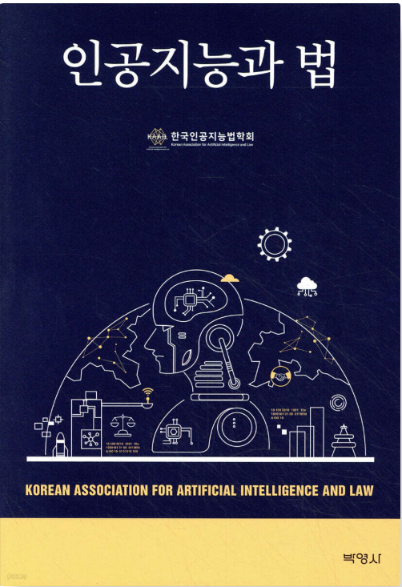
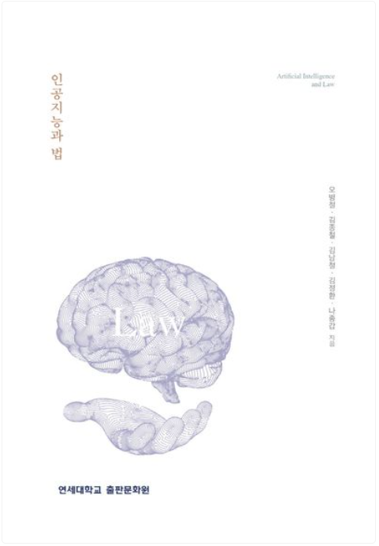
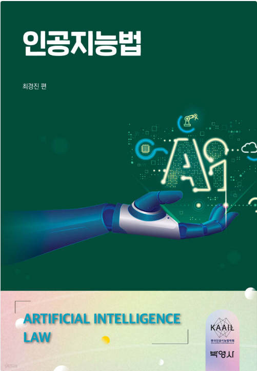
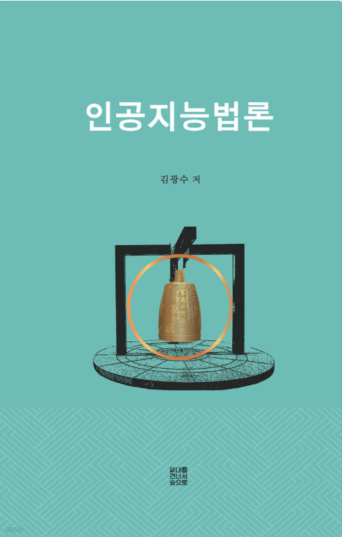
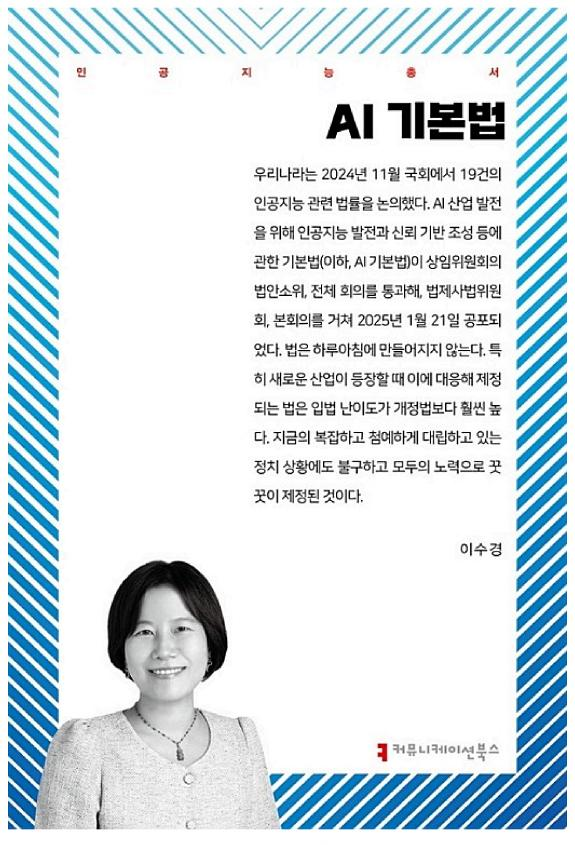
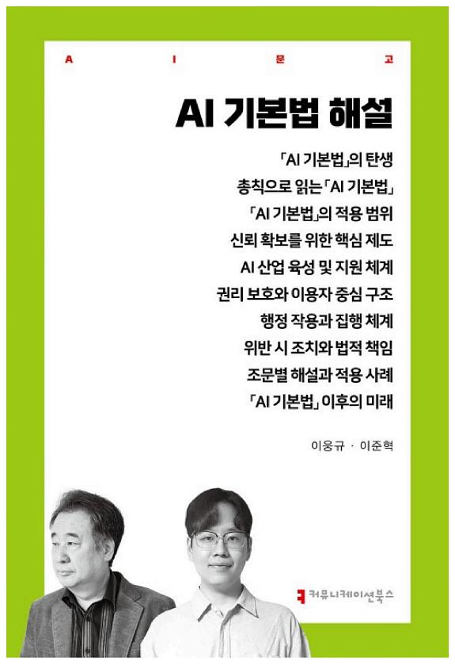

① 인공지능 발전과 신뢰 기반 조성 등에 관한 기본법 — 전문 (6장 43개조, 조문단위 46개)
법률 제21311호 · 제정 2025-01-21 · 시행 2026-07-21 · 일부개정 2026-01-20 · 소관 과학기술정보통신부. 각 조문 우측의 초록 링크는 본문에서 확인되는 시행령 인용 조문으로 바로 이동합니다.
제1장총칙
이 법은 인공지능의 건전한 발전과 신뢰 기반 조성에 필요한 기본적인 사항을 규정함으로써 국민의 권익과 존엄성을 보호하고 국민의 삶의 질 향상과 국가경쟁력을 강화하는 데 이바지함을 목적으로 한다.
이 법에서 사용하는 용어의 뜻은 다음과 같다. <개정 2026.1.20>
- 1. "인공지능"이란 학습, 추론, 지각, 판단, 언어의 이해 등 인간이 가진 지적 능력을 전자적 방법으로 구현한 것을 말한다.
- 2. "인공지능시스템"이란 다양한 수준의 자율성과 적응성을 가지고 주어진 목표를 위하여 실제 및 가상환경에 영향을 미치는 예측, 추천, 결정 등의 결과물을 추론하는 인공지능 기반 시스템을 말한다.
- 3. "인공지능기술"이란 인공지능을 구현하기 위하여 필요한 하드웨어ㆍ소프트웨어 기술 또는 그 활용 기술을 말한다.
- 4. "고영향 인공지능"이란 사람의 생명, 신체의 안전 및 기본권에 중대한 영향을 미치거나 위험을 초래할 우려가 있는 인공지능시스템으로서 다음 각 목의 어느 하나의 영역에서 활용되는 것을 말한다.
- 가. 「에너지법」 제2조제1호에 따른 에너지의 공급
- 나. 「먹는물관리법」 제3조제1호에 따른 먹는물의 생산 공정
- 다. 「보건의료기본법」 제3조제1호에 따른 보건의료의 제공 및 이용체계의 구축ㆍ운영
- 라. 「의료기기법」 제2조제1항에 따른 의료기기 및 「디지털의료제품법」 제2조제2호에 따른 디지털의료기기의 개발 및 이용
- 마. 「원자력시설 등의 방호 및 방사능 방재 대책법」 제2조제1항제1호에 따른 핵물질과 같은 항 제2호에 따른 원자력시설의 안전한 관리 및 운영
- 바. 범죄 수사나 체포 업무를 위한 생체인식정보(얼굴ㆍ지문ㆍ홍채 및 손바닥 정맥 등 개인을 식별할 수 있는 신체적ㆍ생리적ㆍ행동적 특징에 관한 개인정보를 말한다)의 분석ㆍ활용
- 사. 채용, 대출 심사 등 개인의 권리ㆍ의무 관계에 중대한 영향을 미치는 판단 또는 평가
- 아. 「교통안전법」 제2조제1호부터 제3호까지에 따른 교통수단, 교통시설, 교통체계의 주요한 작동 및 운영
- 자. 공공서비스 제공에 필요한 자격 확인 및 결정 또는 비용징수 등 국민에게 영향을 미치는 국가, 지방자치단체, 「공공기관의 운영에 관한 법률」 제4조에 따른 공공기관 등(이하 "국가기관등"이라 한다)의 의사결정
- 차. 「교육기본법」 제9조제1항에 따른 유아교육ㆍ초등교육 및 중등교육에서의 학생 평가
- 카. 그 밖에 사람의 생명ㆍ신체의 안전 및 기본권 보호에 중대한 영향을 미치는 영역으로서 대통령령으로 정하는 영역
- 5. "생성형 인공지능"이란 입력한 데이터(「데이터 산업진흥 및 이용촉진에 관한 기본법」 제2조제1호에 따른 데이터를 말한다. 이하 같다)의 구조와 특성을 모방하여 글, 소리, 그림, 영상, 그 밖의 다양한 결과물을 생성하는 인공지능시스템을 말한다.
- 6. "인공지능산업"이란 인공지능 또는 인공지능기술을 활용한 제품(이하 "인공지능제품"이라 한다)을 개발ㆍ제조ㆍ생산 또는 유통하거나 이와 관련한 서비스(이하 "인공지능서비스"라 한다)를 제공하는 산업을 말한다.
- 7. "인공지능사업자"란 인공지능산업과 관련된 사업을 하는 자로서 다음 각 목의 어느 하나에 해당하는 법인, 단체, 개인 및 국가기관등을 말한다.
- 가. 인공지능개발사업자: 인공지능을 개발하여 제공하는 자
- 나. 인공지능이용사업자: 가목의 사업자가 제공한 인공지능을 이용하여 인공지능제품 또는 인공지능서비스를 제공하는 자
- 8. "이용자"란 인공지능제품 또는 인공지능서비스를 제공받는 자를 말한다.
- 9. "영향받는 자"란 인공지능제품 또는 인공지능서비스에 의하여 자신의 생명, 신체의 안전 및 기본권에 중대한 영향을 받는 자를 말한다.
- 10. "인공지능사회"란 인공지능을 통하여 산업ㆍ경제, 사회ㆍ문화, 행정 등 모든 분야에서 가치를 창출하고 발전을 이끌어가는 사회를 말한다.
- 11. "인공지능윤리"란 인간의 존엄성에 대한 존중을 기초로 하여, 국민의 권익과 생명ㆍ재산을 보호할 수 있는 안전하고 신뢰할 수 있는 인공지능사회를 구현하기 위하여 인공지능의 개발, 제공 및 이용 등 모든 영역에서 사회구성원이 지켜야 할 윤리적 기준을 말한다.
- 12. "학습용데이터"란 인공지능의 개발ㆍ활용 등에 사용되는 데이터를 말한다.
① 인공지능기술과 인공지능산업은 안전성과 신뢰성을 제고하여 국민의 삶의 질을 향상시키는 방향으로 발전되어야 한다.
② 영향받는 자는 인공지능의 최종결과 도출에 활용된 주요 기준 및 원리 등에 대하여 기술적ㆍ합리적으로 가능한 범위에서 명확하고 의미 있는 설명을 제공받을 수 있어야 한다.
③ 국가 및 지방자치단체는 인공지능사업자의 창의정신을 존중하고, 안전한 인공지능 이용환경의 조성을 위하여 노력하여야 한다.
④ 국가 및 지방자치단체는 인공지능이 가져오는 사회ㆍ경제ㆍ문화와 국민의 일상생활 등 모든 영역에서의 변화에 대응하여 모든 국민이 안정적으로 적응할 수 있도록 시책을 강구하여야 한다.
⑤ 국가 및 지방자치단체는 인공지능 관련 정책의 개발과 수립 과정에 인공지능제품 또는 인공지능서비스의 이용에 어려움을 겪는 장애인ㆍ고령자 등 대통령령으로 정하는 취약계층(이하 "인공지능취약계층"이라 한다)의 참여를 보장하고 의견이 반영될 수 있도록 노력하여야 한다. <신설 2026.1.20>
① 이 법은 국외에서 이루어진 행위라도 국내 시장 또는 이용자에게 영향을 미치는 경우에는 적용한다.
② 이 법은 국방 또는 국가안보 목적으로만 개발ㆍ이용되는 인공지능으로서 대통령령으로 정하는 인공지능에 대하여는 적용하지 아니한다.
① 인공지능, 인공지능기술, 인공지능산업 및 인공지능사회(이하 "인공지능등"이라 한다)에 관하여 다른 법률에 특별한 규정이 있는 경우를 제외하고는 이 법에서 정하는 바에 따른다.
② 인공지능등에 관하여 다른 법률을 제정하거나 개정하는 경우에는 이 법의 목적에 부합하도록 하여야 한다.
제2장인공지능의 건전한 발전과 신뢰 기반 조성을 위한 추진체계
① 과학기술정보통신부장관은 관계 중앙행정기관의 장 및 지방자치단체의 장의 의견을 들어 3년마다 인공지능기술 및 인공지능산업의 진흥과 국가경쟁력 강화를 위하여 인공지능 기본계획(이하 "기본계획"이라 한다)을 제7조에 따른 국가인공지능전략위원회의 심의ㆍ의결을 거쳐 수립ㆍ변경 및 시행하여야 한다. 다만, 기본계획 중 대통령령으로 정하는 경미한 사항을 변경하는 경우에는 그러하지 아니하다. <개정 2026.1.20>
② 기본계획에는 다음 각 호의 사항이 포함되어야 한다. <개정 2026.1.20>
- 1. 인공지능등에 관한 정책의 기본 방향과 전략에 관한 사항
- 2. 인공지능산업의 체계적 육성을 위한 전문인력의 양성 및 인공지능 개발ㆍ활용 촉진 기반 조성 등에 관한 사항
- 3. 인공지능윤리의 확산 등 건전한 인공지능사회 구현을 위한 법ㆍ제도 및 문화에 관한 사항
- 4. 인공지능기술 개발 및 인공지능산업 진흥을 위한 재원의 확보와 투자의 방향 등에 관한 사항
- 4의2. 「공공데이터의 제공 및 이용 활성화에 관한 법률」에 따른 공공데이터를 이용한 학습용데이터 생성, 공공데이터 제공 등의 범위와 기준 및 그 활성화에 관한 사항
- 5. 인공지능의 공정성ㆍ투명성ㆍ책임성ㆍ안전성ㆍ접근성 확보 등 신뢰 기반 조성에 관한 사항
- 6. 인공지능기술의 발전 방향 및 그에 따른 교육ㆍ노동ㆍ경제ㆍ문화 등 사회 각 영역의 변화와 대응에 관한 사항
- 6의2. 인공지능기술의 이해 및 활용을 위한 교육의 지원 및 홍보에 관한 사항
- 7. 인공지능제품 또는 인공지능서비스에 대한 인공지능취약계층의 접근ㆍ이용을 보장하기 위한 사항
- 8. 그 밖에 인공지능기술 및 인공지능산업의 진흥과 국제협력 등 국가경쟁력 강화를 위하여 과학기술정보통신부장관이 필요하다고 인정하는 사항
③ 과학기술정보통신부장관은 기본계획을 수립할 때에는 「지능정보화 기본법」 제6조제1항에 따른 종합계획 및 같은 법 제7조제1항에 따른 실행계획을 고려하여야 하며, 제2항제4호의2에 따른 학습용데이터 중 「공공데이터의 제공 및 이용 활성화에 관한 법률」에 따라 공공데이터를 학습용데이터로 제공하기 위한 사항에 대해서는 행정안전부장관과 협의하여 정한다. <개정 2026.1.20>
④ 과학기술정보통신부장관은 관계 중앙행정기관, 지방자치단체 및 공공기관(「지능정보화 기본법」 제2조제16호에 따른 공공기관을 말한다. 이하 같다)의 장에게 기본계획의 수립에 필요한 자료의 제출을 요청할 수 있다. 이 경우 자료의 제출을 요청받은 기관의 장은 특별한 사정이 없으면 이에 따라야 한다.
⑤ 기본계획은 「지능정보화 기본법」 제13조제1항에 따른 인공지능 및 인공지능산업 분야의 부문별 추진계획으로 본다.
⑥ 중앙행정기관의 장 및 지방자치단체의 장은 소관 주요 정책을 수립하고 집행할 때 기본계획을 고려하여야 한다.
⑦ 기본계획의 수립ㆍ변경 및 시행에 필요한 사항은 대통령령으로 정한다.
① 인공지능 발전과 신뢰 기반 조성 등을 위한 주요 정책 등에 관한 사항을 심의ㆍ의결하기 위하여 대통령 소속으로 국가인공지능전략위원회(이하 "위원회"라 한다)를 둔다. <개정 2026.1.20>
② 위원회는 위원장 1명과 3명 이내의 부위원장을 포함한 60명 이내의 위원으로 구성한다. 이 경우 제4항제4호에 따른 위원이 전체 위원의 과반수가 되어야 하고, 특정 성(性)으로만 위원회를 구성할 수 없다. <개정 2026.1.20>
③ 위원회의 위원장은 대통령이 되고, 부위원장은 제4항제1호 또는 제4호에 해당하는 사람 중 대통령이 지명하는 사람이 된다. <개정 2026.1.20>
④ 위원회의 위원은 다음 각 호의 사람이 된다.
- 1. 대통령령으로 정하는 관계 중앙행정기관의 장
- 2. 국가안보실의 인공지능에 관한 업무를 담당하는 차장
- 3. 대통령비서실의 인공지능에 관한 업무를 보좌하는 수석비서관
- 4. 인공지능 관련 전문지식과 경험이 풍부한 사람 중 대통령이 위촉하는 사람
⑤ 위원회의 위원장은 위원회를 대표하고 위원회의 사무를 총괄한다.
⑥ 위원회의 위원장은 필요한 경우 부위원장으로 하여금 그 직무를 대행하게 할 수 있다.
⑦ 제4항제4호에 따른 위원의 임기는 2년으로 하되 한 차례에 한정하여 연임할 수 있다.
⑧ 위원회에 간사위원 1명을 두며, 간사위원은 제4항제3호의 위원이 된다.
⑨ 위원회의 위원은 그 직무상 알게 된 비밀을 타인에게 누설하거나 직무상 목적 외의 용도로 사용하여서는 아니 된다. 다만, 다른 법률에 특별한 규정이 있는 경우에는 그러하지 아니하다.
⑩ 위원회의 위원장은 위원회의 회의를 소집하고 그 의장이 된다.
⑪ 위원회의 회의는 위원 과반수의 출석으로 개의하고, 출석위원 과반수의 찬성으로 의결한다.
⑫ 위원회의 업무 및 운영을 지원하기 위하여 위원회에 지원단을 둔다.
⑬ 위원회는 이 법 시행일부터 5년간 존속한다.
⑭ 그 밖에 위원회와 제12항에 따른 지원단의 구성 및 운영 등에 필요한 사항은 대통령령으로 정한다.
① 위원회는 다음 각 호의 사항을 심의ㆍ의결한다. <개정 2026.1.20>
- 1. 기본계획의 수립ㆍ변경 및 시행의 점검ㆍ분석에 관한 사항
- 2. 인공지능등 관련 국가 비전 및 중장기 전략 수립에 관한 사항
- 2의2. 인공지능 관련 정책 및 사업 등의 수립ㆍ조정 및 부처 간 조율에 관한 사항
- 2의3. 인공지능 관련 정책 및 사업 등에 대한 이행점검 및 성과관리에 관한 사항
- 3. 인공지능등에 관한 연구개발 전략 수립에 관한 사항
- 4. 인공지능등에 관한 투자 방향 설정 및 투자 전략 수립에 관한 사항
- 5. 인공지능산업 발전과 경쟁력을 저해하는 규제의 발굴 및 개선에 관한 사항
- 5의2. 인공지능등 관련 기술ㆍ인력ㆍ입지 등 제도 개선에 관한 사항
- 5의3. 인공지능 및 인공지능기술 관련 전문인력의 양성 및 지원에 관한 사항
- 6. 인공지능 데이터센터(「지능정보화 기본법」 제40조제1항에 따른 데이터센터를 말한다. 이하 같다) 등 인프라 확충 방안에 관한 사항
- 6의2. 인공지능 발전을 위한 데이터(학습용데이터를 포함한다) 수집ㆍ관리 및 활용 촉진에 관한 사항
- 7. 제조업ㆍ서비스업 등 산업부문 및 공공부문에서의 인공지능 활용 촉진에 관한 사항
- 8. 인공지능 국제규범 마련 등 인공지능 관련 국제협력에 관한 사항
- 9. 제2항에 따른 권고 또는 의견의 표명에 관한 사항
- 10. 고영향 인공지능 규율에 관한 사항
- 11. 고영향 인공지능과 관련된 사회적 변화 양상과 정책적 대응에 관한 사항
- 12. 이 법 또는 다른 법률에서 위원회의 심의사항으로 정한 사항
- 13. 그 밖에 위원회의 위원장이 필요하다고 인정하여 위원회의 회의에 부치는 사항
② 위원회는 국가기관등의 장 및 인공지능사업자 등에 대하여 인공지능의 올바른 사용과 인공지능윤리의 실천, 인공지능기술의 안전성ㆍ신뢰성에 관한 권고 또는 의견의 표명을 할 수 있다.
③ 위원회가 국가기관등의 장에게 법령ㆍ제도의 개선 또는 실천방안의 수립 등에 대하여 제2항에 따른 권고 또는 의견의 표명을 한 때에는 해당 국가기관등의 장은 법령ㆍ제도 등의 개선방안과 실천방안 등을 수립하여야 한다.
① 위원회의 위원은 업무의 공정성 확보를 위하여 다음 각 호의 어느 하나에 해당하는 경우에는 해당 안건의 심의ㆍ의결에서 제척(除斥)된다.
- 1. 위원 또는 위원이 속한 법인ㆍ단체 등과 직접적인 이해관계가 있는 경우
- 2. 위원의 가족(「민법」 제779조에 따른 가족을 말한다)이 이해관계인인 경우
② 심의 대상 안건의 당사자(당사자가 법인ㆍ단체 등인 경우에는 그 임원 및 직원을 포함한다)는 위원에게 공정한 직무집행을 기대하기 어려운 사정이 있으면 위원회에 기피 신청을 할 수 있으며, 위원회는 기피 신청이 타당하다고 인정하면 의결로 기피를 결정하여야 한다.
③ 위원은 제1항 또는 제2항의 사유에 해당하면 스스로 해당 안건의 심의를 회피하여야 한다.
① 위원회는 위원회의 업무를 전문 분야별로 수행하기 위하여 필요한 경우 분과위원회를 둘 수 있다.
② 위원회는 인공지능등 관련 특정 현안을 논의하기 위하여 필요한 경우 특별위원회를 둘 수 있다.
③ 위원회는 인공지능등 관련 사항을 전문적으로 검토하기 위하여 관계 전문가 등으로 구성된 자문단을 둘 수 있다.
④ 위원회는 정부 내 인공지능 주요 시책의 수립과 사업의 효율적인 추진을 위하여 대통령령으로 정하는 인공지능책임관으로 구성되는 인공지능책임관협의회를 운영할 수 있다. <신설 2026.1.20>
⑤ 그 밖에 분과위원회, 특별위원회, 자문단 및 인공지능책임관협의회의 구성ㆍ운영 등에 필요한 사항은 대통령령으로 정한다. <개정 2026.1.20>
① 과학기술정보통신부장관은 인공지능 관련 정책의 개발과 국제규범 정립ㆍ확산에 필요한 업무를 종합적으로 수행하기 위하여 인공지능정책센터(이하 "센터"라 한다)를 지정할 수 있다.
② 센터는 다음 각 호의 사업을 수행한다.
- 1. 기본계획의 수립ㆍ시행에 필요한 전문기술의 지원
- 2. 인공지능과 관련한 시책의 개발 및 관련 사업의 기획ㆍ시행에 관한 전문기술의 지원
- 3. 인공지능의 활용 확산에 따른 사회, 경제, 문화 및 국민의 일상생활 등에 미치는 영향의 조사ㆍ분석
- 4. 인공지능 및 인공지능기술 관련 정책 개발을 지원하기 위한 동향 분석，사회ㆍ문화 변화와 미래예측 및 법ㆍ제도의 조사ㆍ연구
- 5. 다른 법령에서 센터의 업무로 정하거나 센터에 위탁한 사업
- 6. 그 밖에 국가기관등의 장이 위탁하는 사업
③ 그 밖에 센터의 지정 등에 필요한 사항은 대통령령으로 정한다.
① 과학기술정보통신부장관은 인공지능과 관련하여 발생할 수 있는 위험으로부터 국민의 생명ㆍ신체ㆍ재산 등을 보호하고 인공지능사회의 신뢰 기반을 유지하기 위한 상태(이하 "인공지능안전"이라 한다)를 확보하기 위한 업무를 전문적이고 효율적으로 수행하기 위하여 인공지능안전연구소(이하 "안전연구소"라 한다)를 운영할 수 있다.
② 안전연구소는 다음 각 호의 사업을 수행한다.
- 1. 인공지능안전 관련 위험 정의 및 분석
- 2. 인공지능안전 정책 연구
- 3. 인공지능안전 평가 기준ㆍ방법 연구
- 4. 인공지능안전 기술 및 표준화 연구
- 5. 인공지능안전 관련 국제교류ㆍ국제협력
- 6. 제32조에 따른 인공지능시스템의 안전성 확보에 관한 지원
- 7. 그 밖에 인공지능안전에 관한 사업으로서 대통령령으로 정하는 사업
③ 정부는 안전연구소의 운영과 사업 추진 등에 필요한 경비를 예산의 범위에서 출연하거나 지원할 수 있다.
④ 그 밖에 안전연구소의 운영 등에 필요한 사항은 대통령령으로 정한다.
제3장인공지능기술 개발 및 산업 육성
제1절 인공지능산업 기반 조성
① 정부는 인공지능기술 개발 활성화를 위하여 다음 각 호의 사업을 지원할 수 있다.
- 1. 국내외 인공지능기술 동향ㆍ수준 및 관련 제도의 조사
- 2. 인공지능기술의 연구ㆍ개발, 시험 및 평가 또는 개발된 기술의 활용
- 3. 인공지능기술 확산, 인공지능기술 협력ㆍ이전 등 기술의 실용화 및 사업화 지원
- 4. 인공지능기술의 구현을 위한 정보의 원활한 유통 및 산학협력
- 5. 그 밖에 인공지능기술의 개발 및 연구ㆍ조사와 관련하여 대통령령으로 정하는 사업
② 정부는 인공지능기술의 안전하고 편리한 이용을 위하여 다음 각 호의 사업을 지원할 수 있다.
- 1. 「지능정보화 기본법」 제60조제1항 각 호의 사항을 인공지능기술로 구현하는 연구개발 사업
- 2. 「지능정보화 기본법」 제60조제3항에 따른 비상정지 기능을 인공지능제품 또는 인공지능서비스에서 구현하기 위한 기술 연구 지원 및 해당 기술의 확산을 위한 사업
- 3. 인공지능기술의 개발에 있어서 「지능정보화 기본법」 제61조제2항에 따른 사생활등의 보호에 적합한 설계 기준 및 기술의 연구개발 및 보급 사업
- 4. 인공지능기술의 「지능정보화 기본법」 제56조제1항에 따른 사회적 영향평가의 실시와 적용을 위한 연구개발 사업
- 5. 인공지능이 인간의 존엄성 및 기본권을 존중하는 방향으로 개발ㆍ이용될 수 있도록 하는 기술 또는 기준 등의 연구개발 및 보급 사업
- 6. 인공지능의 안전한 개발과 이용을 위한 인식개선, 올바른 이용방법과 안전 환경 조성을 위한 교육 및 홍보 사업
- 7. 그 밖에 인공지능의 개발과 이용에 있어서 국민의 기본권, 신체와 재산을 보호하기 위하여 필요한 사업
③ 정부는 제2항에 따른 사업의 결과를 누구든지 손쉽게 이용할 수 있도록 공개하고 보급하여야 한다. 이 경우 기술을 개발한 자를 보호하기 위하여 필요한 경우에는 보호기간을 정하여 기술사용료를 받을 수 있게 하거나 그 밖의 방법으로 보호할 수 있다.
① 정부는 인공지능기술, 학습용데이터, 인공지능의 안전성ㆍ신뢰성 등과 관련된 표준화를 위하여 다음 각 호의 사업을 추진할 수 있다. <개정 2026.1.20>
- 1. 인공지능기술 관련 표준의 제정ㆍ개정 및 폐지와 그 보급
- 2. 인공지능기술 관련 국내외 표준의 조사ㆍ연구개발
- 3. 그 밖에 인공지능기술 관련 표준화 사업
② 정부는 제1항제1호에 따라 제정된 표준을 고시하여 관련 사업자에게 그 준수를 권고할 수 있다.
③ 정부는 민간 부문에서 추진하는 인공지능기술 관련 표준화 사업에 필요한 지원을 할 수 있다.
④ 정부는 인공지능기술 표준과 관련된 국제표준기구 또는 국제표준기관과 협력체계를 유지ㆍ강화하여야 한다.
⑤ 그 밖에 제1항 및 제3항에 따른 표준화 사업의 추진 및 지원 등과 관련하여 필요한 사항은 대통령령으로 정한다.
① 과학기술정보통신부장관은 관계 중앙행정기관의 장과 협의하여 학습용데이터의 생산ㆍ수집ㆍ관리ㆍ유통ㆍ활용 촉진 및 품질수준 확보 등을 위하여 필요한 시책을 추진하여야 한다. <개정 2026.1.20>
② 정부는 학습용데이터의 생산ㆍ수집ㆍ관리ㆍ유통 및 활용 등에 관한 시책을 효율적으로 추진하기 위하여 지원대상사업을 선정하고 예산의 범위에서 지원할 수 있다.
③ 정부는 학습용데이터의 생산ㆍ수집ㆍ관리ㆍ유통 및 활용의 활성화 등을 위하여 다양한 학습용데이터를 제작ㆍ생산하여 제공하는 사업(이하 "학습용데이터 구축사업"이라 한다)을 시행할 수 있다.
④ 과학기술정보통신부장관은 학습용데이터 구축사업의 효율적 수행을 위하여 학습용데이터를 통합적으로 제공ㆍ관리할 수 있는 시스템(이하 "통합제공시스템"이라 한다)을 구축ㆍ관리하고 민간이 자유롭게 이용할 수 있도록 제공하여야 한다.
⑤ 과학기술정보통신부장관은 통합제공시스템을 이용하는 자에 대하여 비용을 징수할 수 있다.
⑥ 그 밖에 제2항에 따른 지원대상사업의 선정 및 지원, 학습용데이터 구축사업의 시행, 통합제공시스템의 구축ㆍ관리 및 제5항에 따른 비용의 징수 등에 필요한 사항은 대통령령으로 정한다.
제2절 인공지능기술 개발 및 인공지능산업 활성화
① 국가 및 지방자치단체는 기업 및 공공기관의 인공지능기술 도입 촉진 및 활용 확산을 위한 시책을 수립ㆍ시행하여야 한다. <신설 2026.1.20>
② 국가 및 지방자치단체는 기업 및 공공기관의 인공지능기술 도입 촉진 및 활용 확산을 위하여 필요한 경우에는 다음 각 호의 지원을 할 수 있다. <개정 2026.1.20>
- 1. 인공지능기술, 인공지능제품 또는 인공지능서비스의 개발 지원 및 연구ㆍ개발 성과의 확산
- 2. 인공지능기술을 도입ㆍ활용하고자 하는 기업 및 공공기관에 대한 컨설팅 지원
- 2의2. 공공기관이 보유ㆍ관리하고 있는 데이터를 학습용데이터로 생성ㆍ제공하고 적절한 품질수준을 확보하기 위하여 필요한 지원
- 3. 「중소기업기본법」 제2조제1항에 따른 중소기업, 「벤처기업육성에 관한 특별법」 제2조제1항에 따른 벤처기업 및 「소상공인기본법」 제2조제1항에 따른 소상공인(이하 "중소기업등"이라 한다)의 임직원에 대한 인공지능기술 도입 및 활용 관련 교육 지원
- 4. 중소기업등의 인공지능기술 도입 및 활용에 사용되는 자금의 지원
- 5. 그 밖에 기업 및 공공기관의 인공지능기술 도입 및 활용을 촉진하기 위하여 대통령령으로 정하는 사항
③ 국가기관등은 업무 수행에 필요한 제품 또는 서비스를 구매하거나 용역을 발주하려는 경우 대통령령으로 정하는 인공지능제품 또는 인공지능서비스를 우선적으로 고려하여야 한다. 다만, 업무 특성상 인공지능기술의 활용이 적합하지 아니한 경우에는 그러하지 아니하다. <신설 2026.1.20>
④ 제3항에 따른 인공지능제품 또는 인공지능서비스의 구매 또는 사용으로 국가기관등에 손해가 발생한 경우에도 그 구매 또는 사용 업무를 담당한 자는 해당 기관의 손해에 대하여 배상할 책임이 없다. 다만, 해당 업무 담당자의 고의 또는 중대한 과실로 손해가 발생한 경우에는 그러하지 아니하다. <신설 2026.1.20>
⑤ 제2항에 따른 지원에 필요한 사항은 대통령령으로 정한다. <개정 2026.1.20>
① 이 법에 따라 인공지능기술 및 인공지능산업과 관련한 각종 지원시책을 시행할 때에는 중소기업등을 우선 고려하여야 한다.
② 정부는 인공지능산업에 대한 중소기업등의 참여 활성화를 위하여 노력하여야 하며, 이와 관련한 사항을 기본계획에 반영하여야 한다.
③ 과학기술정보통신부장관은 인공지능의 안전성 및 신뢰성 확보를 위하여 중소기업등의 제34조에 따른 조치 이행 및 제35조에 따른 영향평가를 지원할 수 있다.
① 국가와 지방자치단체는 경제적 여건으로 인하여 인공지능제품 및 인공지능서비스를 이용하기 어려운 사람에 대하여 예산의 범위에서 그 비용의 전부 또는 일부를 지원할 수 있다.
② 제1항에 따른 비용 지원의 요건과 대상 등에 필요한 사항은 대통령령으로 정한다.
① 정부는 인공지능산업 분야의 창업을 활성화하기 위하여 다음 각 호의 사업을 추진할 수 있다.
- 1. 인공지능산업 분야의 창업자 발굴 및 육성ㆍ지원 등에 관한 사업
- 2. 인공지능산업 분야의 창업 활성화를 위한 교육ㆍ훈련에 관한 사업
- 3. 제21조에 따른 전문인력의 우수 인공지능기술에 대한 사업화 지원
- 4. 인공지능기술의 가치평가 및 창업자금의 금융지원
- 5. 인공지능 관련 연구 및 기술개발 성과의 제공
- 6. 인공지능산업 분야의 창업을 지원하는 기관ㆍ단체의 육성
- 7. 그 밖에 인공지능산업 분야의 창업 활성화를 위하여 필요한 사업
② 지방자치단체는 인공지능산업 분야의 창업을 지원하는 공공기관 등 공공단체에 출연하거나 출자할 수 있다.
③ 중앙행정기관의 장은 인공지능산업 분야의 창업을 활성화하기 위하여 중소벤처기업부장관과 협의하여 「벤처투자 촉진에 관한 법률」 제70조에 따른 벤처투자모태조합을 활용한 지원을 할 수 있다. <신설 2026.1.20>
④ 제3항에 따른 지원을 위한 자금은 다음 각 호의 재원으로 조성한다. <신설 2026.1.20>
- 1. 국가, 지방자치단체 또는 공공기관의 출자금
- 2. 국가, 지방자치단체 또는 공공기관 외의 자로서 인공지능산업과 관련하여 벤처투자모태조합에 출자를 희망하는 자의 출자금
- 3. 그 밖의 부대수입
⑤ 제3항에 따른 벤처투자모태조합에의 출자에 필요한 사항은 대통령령으로 정한다. <신설 2026.1.20>
① 정부는 인공지능산업과 그 밖의 산업 간 융합을 촉진하고 전 분야에서 인공지능 활용을 활성화하기 위하여 필요한 시책을 수립하여 추진하여야 한다.
② 정부는 인공지능 융합 제품 및 서비스의 개발을 지원하기 위하여 필요한 경우에는 「국가연구개발혁신법」에 따른 국가연구개발사업에 인공지능 융합 제품 및 서비스에 관한 연구개발과제를 우선적으로 반영하여 추진할 수 있다.
③ 정부는 제2항에 따라 개발된 인공지능 융합 제품 및 서비스에 대하여는 「정보통신 진흥 및 융합 활성화 등에 관한 특별법」 제37조에 따른 임시허가 및 같은 법 제38조의2에 따른 실증을 위한 규제특례가 원활히 시행될 수 있도록 적극 지원하여야 한다.
① 정부는 인공지능산업의 발전과 신뢰 기반 조성을 위하여 법령의 정비 등 관련 제도를 개선할 수 있도록 노력하여야 한다.
② 정부는 제1항에 따른 제도개선을 촉진하기 위하여 관련 법ㆍ제도의 연구 및 사회 각계의 의견수렴 등에 필요한 행정적ㆍ재정적 지원을 할 수 있다.
① 과학기술정보통신부장관은 인공지능기술의 개발 및 인공지능산업의 발전을 위하여 「지능정보화 기본법」 제23조제1항에 따른 시책에 따라 인공지능 및 인공지능기술 관련 전문인력을 양성하고 지원할 수 있도록 다음 각 호의 사업을 추진할 수 있다. <개정 2026.1.20>
- 1. 전문인력의 직무역량 강화 및 경력개발을 위한 교육훈련 프로그램 개발ㆍ활용
- 2. 전문인력의 취업 지원 및 신규 인력유입 활성화 등 고용 촉진
- 3. 전문인력의 공직 진출 기회 확대 등 진출 다변화 촉진
- 4. 전문인력의 국내외 연수 지원 및 국제교류 활성화
- 5. 전문인력의 근로환경 개선과 처우 증진 등 복지 향상
- 6. 그 밖에 인공지능 및 인공지능기술 관련 전문인력의 양성ㆍ지원을 위한 사업
② 정부는 인공지능 및 인공지능기술 관련 해외 전문인력의 확보를 위하여 다음 각 호의 시책을 추진할 수 있다.
- 1. 인공지능 및 인공지능기술 관련 해외 대학ㆍ연구기관ㆍ기업 등의 전문인력에 관한 조사ㆍ분석
- 2. 해외 전문인력의 유치를 위한 국제네트워크 구축
- 3. 해외 전문인력의 국내 취업 지원
- 4. 국내 인공지능 연구기관의 해외진출 및 해외 인공지능 연구기관의 국내 유치 지원
- 5. 인공지능 및 인공지능기술 관련 국제기구 및 국제행사의 국내 유치 지원
- 6. 그 밖에 해외 전문인력의 확보를 위하여 필요한 사항
① 정부는 인공지능과 관련한 국제적 동향을 파악하고 국제협력을 추진하여야 한다.
② 정부는 인공지능산업의 경쟁력 강화와 해외시장 진출을 촉진하기 위하여 인공지능산업에 종사하는 개인ㆍ기업 또는 단체 등에 대하여 다음 각 호의 지원을 할 수 있다.
- 1. 인공지능산업 관련 정보ㆍ기술ㆍ인력의 국제교류
- 2. 인공지능산업 관련 해외진출에 관한 정보의 수집ㆍ분석 및 제공
- 3. 국가 간 인공지능기술, 인공지능제품 또는 인공지능서비스의 공동 연구ㆍ개발 및 국제표준화
- 4. 인공지능산업 관련 외국자본의 투자유치
- 5. 인공지능등 관련 해외 전문 학회 및 전시회 참가 등 홍보 및 해외 마케팅
- 6. 인공지능제품 또는 인공지능서비스의 수출에 필요한 판매체계ㆍ유통체계 및 협력체계 등의 구축
- 7. 인공지능윤리에 관한 국제적 동향 파악 및 국제협력
- 8. 그 밖에 인공지능산업의 경쟁력 강화와 해외시장 진출 촉진을 위하여 필요한 사항
③ 정부는 제2항 각 호에 따른 지원을 효율적으로 수행하기 위하여 대통령령으로 정하는 바에 따라 공공기관 또는 그 밖의 단체에 이를 위탁하거나 대행하게 할 수 있으며, 이에 필요한 비용을 보조할 수 있다.
① 대학, 기업 등 대통령령으로 정하는 자는 단독으로 또는 공동으로 인공지능의 개발ㆍ활용에 관한 연구소(이하 "인공지능연구소"라 한다)를 설립ㆍ운영할 수 있다.
② 제1항에 따라 대학, 기업 등 대통령령으로 정하는 자가 인공지능연구소를 설립하려는 경우에는 다음 각 호의 요건을 갖추고 과학기술정보통신부장관의 허가를 받아야 한다.
- 1. 3명 이상의 발기인(發起人)이 있을 것
- 2. 제5항의 사업을 수행할 수 있는 인력ㆍ시설 등의 능력을 보유하고 있을 것
- 3. 그 밖에 인공지능연구소의 설립ㆍ운영을 위하여 필요한 것으로서 대통령령으로 정하는 요건을 갖출 것
③ 인공지능연구소에 소장을 둔다. 인공지능연구소의 소장은 인공지능연구소를 대표하고 인공지능연구소의 업무를 총괄한다.
④ 인공지능연구소의 정관에는 다음 각 호의 사항이 포함되어야 한다.
- 1. 목적
- 2. 명칭
- 3. 사무소의 소재지
- 4. 자산에 관한 규정
- 5. 소장의 자격과 임면에 관한 규정
- 6. 소장의 책임과 권한에 관한 규정
⑤ 인공지능연구소는 업종별ㆍ기능별로 다음 각 호의 사업을 수행한다.
- 1. 인공지능기술 연구개발
- 2. 인공지능기술과 다른 기술 및 학제 간 융합에 관한 연구개발
- 3. 인공지능기술 연구개발 성과 관리ㆍ이전ㆍ활용 및 사업화
- 4. 인공지능기술 연구개발 전문인력 양성
- 5. 인공지능기술 연구개발 관련 국제교류ㆍ국제협력
- 6. 그 밖에 인공지능기술 연구개발에 필요한 사항
⑥ 정부와 지방자치단체는 예산의 범위에서 인공지능연구소의 운영과 사업 추진 등에 필요한 경비를 지원할 수 있다.
⑦ 인공지능연구소는 운영에 필요한 재원을 조성하기 위하여 정부ㆍ지방자치단체 외의 자로부터 보조금 또는 기부금 등을 받거나, 정관으로 정하는 바에 따라 수익사업을 할 수 있다.
⑧ 인공지능연구소의 소장은 인공지능기술의 연구개발 등을 위하여 필요한 경우 제1항에 따른 대학, 기업 등 대통령령으로 정하는 자와 협의하여 임직원을 파견받거나 겸임근무하게 하여 인공지능연구소의 연구 등을 담당하게 할 수 있으며, 파견받은 임직원의 소속 기관에 필요한 지원을 할 수 있다. 이 경우 필요하면 과학기술정보통신부장관에게 협의를 위한 지원을 요청할 수 있다.
⑨ 인공지능연구소에 관하여 이 법에서 정한 것을 제외하고는 「민법」 중 재단법인에 관한 규정을 준용한다.
⑩ 과학기술정보통신부장관은 인공지능연구소가 다음 각 호의 어느 하나에 해당하는 경우 시정을 명하거나 그 설립허가를 취소할 수 있다. 다만, 제1호 또는 제2호에 해당하는 경우 그 허가를 취소하여야 한다.
- 1. 거짓이나 그 밖의 부정한 방법으로 설립허가를 받은 경우
- 2. 목적 달성이 불가능하게 된 경우
- 3. 제2항에 따른 허가 요건을 충족하지 못하게 된 경우
- 4. 목적사업 외의 사업을 한 경우
- 5. 법령, 정관 또는 이 법에 따른 명령을 위반한 경우
- 6. 공익을 해치는 행위를 한 경우
- 7. 정당한 사유 없이 설립허가를 받은 날부터 6개월 이내에 목적사업을 시작하지 아니하거나 1년 이상 사업실적이 없는 경우
⑪ 과학기술정보통신부장관은 제10항에 따라 인공지능연구소의 설립허가를 취소하려는 경우에는 청문을 하여야 한다.
⑫ 그 밖에 인공지능연구소의 설립 절차, 운영, 지원 등에 필요한 사항은 대통령령으로 정한다.
과학기술정보통신부장관은 혁신적인 인공지능기술의 확보를 위하여 필요한 경우 대통령령으로 정하는 바에 따라 인공지능의 개발ㆍ활용 등에 관한 연구를 수행하는 기관을 설립ㆍ운영할 수 있다.
① 국가 및 지방자치단체는 인공지능산업의 진흥과 인공지능 개발ㆍ활용의 경쟁력 강화를 위하여 인공지능 및 인공지능기술의 연구ㆍ개발을 수행하는 기업, 기관이나 단체의 기능적ㆍ물리적ㆍ지역적 집적화를 추진할 수 있다.
② 국가 및 지방자치단체는 제1항에 따른 집적화를 위하여 필요한 경우에는 대통령령으로 정하는 바에 따라 인공지능집적단지(이하 "인공지능집적단지"라 한다)를 지정하여 행정적ㆍ재정적ㆍ기술적 지원을 할 수 있다.
③ 국가 및 지방자치단체는 다음 각 호의 어느 하나에 해당하는 경우 인공지능집적단지의 지정을 취소할 수 있다. 다만, 제1호에 해당하는 경우에는 그 지정을 취소하여야 한다.
- 1. 거짓이나 그 밖의 부정한 방법으로 지정을 받은 경우
- 2. 인공지능집적단지 지정의 목적을 달성하기 어렵다고 인공지능집적단지를 지정한 국가 또는 지방자치단체의 장이 인정하는 경우
④ 정부는 제1항에 따른 집적화를 지역에 효과적으로 정착시키기 위하여 관련 업무를 종합적으로 지원하는 전담기관을 설치하거나 지정할 수 있다.
⑤ 정부는 제4항에 따른 전담기관의 운영 및 사업 수행에 필요한 비용의 전부 또는 일부를 출연하거나 보조할 수 있다.
⑥ 그 밖에 인공지능집적단지의 지정 및 지정취소와 제4항에 따른 전담기관의 설치 또는 지정 등에 필요한 사항은 대통령령으로 정한다.
① 국가 및 지방자치단체는 인공지능사업자가 개발하거나 이전받은 기술의 실증, 성능시험, 제30조에 따른 검ㆍ인증등(이하 "실증시험등"이라 한다)을 지원하기 위하여 시험, 평가 등에 필요한 시설ㆍ장비ㆍ설비 등(이하 "실증기반등"이라 한다)을 구축ㆍ운영할 수 있다.
② 국가 및 지방자치단체는 실증시험등을 촉진하기 위하여 대통령령으로 정하는 기관이 보유하고 있는 실증기반등을 인공지능사업자에게 개방할 수 있다.
③ 그 밖에 실증기반등의 구축ㆍ운영 및 개방 등에 필요한 사항은 대통령령으로 정한다.
① 정부는 인공지능의 개발ㆍ활용 등에 이용되는 데이터센터(이하 "인공지능 데이터센터"라 한다)의 구축 및 운영을 활성화하기 위하여 필요한 시책을 추진하여야 한다.
② 정부는 제1항에 따른 시책을 추진하기 위하여 다음 각 호의 업무를 수행할 수 있다.
- 1. 인공지능 데이터센터의 구축 및 운영에 필요한 행정적ㆍ재정적 지원
- 2. 중소기업, 연구기관 등의 인공지능 데이터센터 이용 지원
- 3. 인공지능 데이터센터 등 인공지능 관련 인프라 시설의 지역별 균형 발전을 위한 지원
① 인공지능등과 관련한 연구 및 업무에 종사하는 자는 인공지능의 개발ㆍ이용 촉진, 인공지능산업 및 인공지능기술의 진흥, 인공지능등에 대한 교육ㆍ홍보 등을 위하여 대통령령으로 정하는 바에 따라 과학기술정보통신부장관의 인가를 받아 한국인공지능진흥협회(이하 "협회"라 한다)를 설립하거나 협회로 지정받을 수 있다.
② 협회는 법인으로 한다.
③ 협회는 다음 각 호의 업무를 수행한다.
- 1. 인공지능기술, 인공지능제품 또는 인공지능서비스의 이용 촉진 및 확산
- 2. 인공지능등에 대한 현황 및 관련 통계 조사
- 3. 인공지능사업자를 위한 공동이용시설의 설치ㆍ운영 및 전문인력 양성을 위한 교육 등
- 4. 인공지능사업자 및 인공지능 관련 전문인력의 해외진출 지원
- 5. 안전하고 신뢰할 수 있는 인공지능의 개발ㆍ활용을 위한 교육 및 홍보
- 6. 이 법 또는 다른 법률에 따라 협회가 위탁받은 사업
- 7. 그 밖에 협회의 설립목적을 달성하는 데 필요한 사업으로서 정관으로 정하는 사업
④ 국가 및 지방자치단체는 인공지능산업의 발전과 신뢰 기반 조성을 위하여 필요한 경우 예산의 범위에서 협회의 사업수행에 필요한 자금을 지원하거나 운영에 필요한 경비를 보조할 수 있다.
⑤ 협회 회원의 자격과 임원에 관한 사항, 협회의 업무 등은 정관으로 정하며, 그 밖에 정관에 포함하여야 할 사항은 대통령령으로 정한다.
⑥ 과학기술정보통신부장관은 제1항에 따른 인가를 한 때에는 그 사실을 공고하여야 한다.
⑦ 협회에 관하여 이 법에 규정된 것을 제외하고는 「민법」 중 사단법인에 관한 규정을 준용한다.
제4장인공지능윤리 및 신뢰성 확보
① 정부는 인공지능윤리의 확산을 위하여 다음 각 호의 사항을 포함하는 인공지능 윤리원칙(이하 "윤리원칙"이라 한다)을 대통령령으로 정하는 바에 따라 제정ㆍ공표할 수 있다.
- 1. 인공지능의 개발ㆍ활용 등의 과정에서 사람의 생명과 신체, 정신적 건강 등에 해가 되지 아니하도록 하는 안전성과 신뢰성에 관한 사항
- 2. 인공지능기술이 적용된 제품ㆍ서비스 등을 모든 사람이 자유롭고 편리하게 이용할 수 있는 접근성에 관한 사항
- 3. 사람의 삶과 번영에의 공헌을 위한 인공지능의 개발ㆍ활용 등에 관한 사항
② 과학기술정보통신부장관은 사회 각계의 의견을 수렴하여 윤리원칙이 인공지능의 개발ㆍ활용 등에 관여하는 모든 사람에 의하여 실현될 수 있도록 실천방안을 수립하고 이를 공개 및 홍보ㆍ교육하여야 한다.
③ 중앙행정기관 또는 지방자치단체의 장이 인공지능윤리기준(그 명칭 및 형태를 불문하고 인공지능윤리에 관한 법령, 기준, 지침, 가이드라인 등을 말한다)을 제정하거나 개정하는 경우 과학기술정보통신부장관은 윤리원칙 및 제2항에 따른 실천방안과의 연계성ㆍ정합성 등에 관한 권고 또는 의견의 표명을 할 수 있다.
① 다음 각 호의 기관 또는 단체는 윤리원칙을 준수하기 위하여 민간자율인공지능윤리위원회(이하 "민간자율위원회"라 한다)를 둘 수 있다.
- 1. 인공지능기술 연구 및 개발을 수행하는 사람이 소속된 교육기관ㆍ연구기관
- 2. 인공지능사업자
- 3. 그 밖에 대통령령으로 정하는 인공지능기술 관련 기관
② 민간자율위원회는 다음 각 호의 업무를 자율적으로 수행한다.
- 1. 인공지능기술 연구ㆍ개발ㆍ활용에 있어서 윤리원칙의 준수 여부 확인
- 2. 인공지능기술 연구ㆍ개발ㆍ활용의 안전 및 인권침해 등에 관한 조사ㆍ연구
- 3. 인공지능기술 연구ㆍ개발ㆍ활용의 절차 및 결과에 관한 조사ㆍ감독
- 4. 해당 기관 또는 단체의 연구자 및 종사자에 대한 윤리원칙 교육
- 5. 인공지능기술 연구ㆍ개발ㆍ활용에 적합한 분야별 인공지능윤리 지침 마련
- 6. 그 밖에 윤리원칙 구현에 필요한 업무
③ 민간자율위원회의 구성ㆍ운영 등에 필요한 사항은 해당 기관 또는 단체 등에서 자율적으로 정한다. 다만, 그 구성을 특정한 성(性)으로만 할 수 없으며, 사회적ㆍ윤리적 타당성을 평가할 수 있는 경험과 지식을 갖춘 사람 및 그 기관 또는 단체에 종사하지 아니하는 사람을 각각 포함하여야 한다.
④ 과학기술정보통신부장관은 민간자율위원회의 공정하고 중립적인 구성ㆍ운영을 위하여 표준 지침 등을 마련하여 보급할 수 있다.
정부는 인공지능이 국민의 생활에 미치는 잠재적 위험을 최소화하고 안전한 인공지능의 이용을 위한 신뢰 기반을 조성하기 위하여 다음 각 호의 시책을 마련하여야 한다.
- 1. 안전하고 신뢰할 수 있는 인공지능 이용환경 조성
- 2. 인공지능의 이용이 국민의 일상생활에 미치는 영향 등에 관한 전망과 예측 및 관련 법령ㆍ제도의 정비
- 3. 인공지능의 안전성ㆍ신뢰성 확보를 위한 안전기술 및 인증기술의 개발 및 확산 지원
- 4. 안전하고 신뢰할 수 있는 인공지능사회 구현 및 인공지능윤리 실천을 위한 교육ㆍ홍보
- 5. 인공지능사업자의 안전성ㆍ신뢰성 관련 자율적인 규약의 제정ㆍ시행 지원
- 6. 인공지능사업자, 이용자 등으로 구성된 인공지능 관련 단체(이하 "단체등"이라 한다)의 인공지능의 안전성ㆍ신뢰성 증진을 위한 자율적인 협력, 윤리지침 제정 등 민간 활동의 지원 및 확산
- 7. 그 밖에 인공지능의 안전성ㆍ신뢰성 확보를 위하여 대통령령으로 정하는 사항
① 과학기술정보통신부장관은 단체등이 인공지능의 안전성ㆍ신뢰성 확보를 위하여 자율적으로 추진하는 검증ㆍ인증 활동(이하 "검ㆍ인증등"이라 한다)을 지원하기 위하여 다음 각 호의 사업을 추진할 수 있다.
- 1. 인공지능의 개발에 관한 가이드라인 보급
- 2. 검ㆍ인증등에 관한 연구의 지원
- 3. 검ㆍ인증등에 이용되는 장비 및 시스템의 구축ㆍ운영 지원
- 4. 검ㆍ인증등에 필요한 전문인력의 양성 지원
- 5. 그 밖에 검ㆍ인증등을 지원하기 위하여 대통령령으로 정하는 사항
② 과학기술정보통신부장관은 검ㆍ인증등을 받고자 하는 중소기업등에 대하여 대통령령으로 정하는 바에 따라 관련 정보를 제공하거나 행정적ㆍ재정적 지원을 할 수 있다.
③ 인공지능사업자가 고영향 인공지능을 제공하는 경우 사전에 검ㆍ인증등을 받도록 노력하여야 한다.
④ 국가기관등이 고영향 인공지능을 이용하려는 경우에는 검ㆍ인증등을 받은 인공지능에 기반한 제품 또는 서비스를 우선적으로 고려하여야 한다.
① 인공지능사업자는 고영향 인공지능이나 생성형 인공지능을 이용한 제품 또는 서비스를 제공하려는 경우 제품 또는 서비스가 해당 인공지능에 기반하여 운용된다는 사실을 이용자에게 사전에 고지하여야 한다.
② 인공지능사업자는 생성형 인공지능 또는 이를 이용한 제품 또는 서비스를 제공하는 경우 그 결과물이 생성형 인공지능에 의하여 생성되었다는 사실을 표시하여야 한다.
③ 인공지능사업자는 인공지능시스템을 이용하여 실제와 구분하기 어려운 가상의 음향, 이미지 또는 영상 등의 결과물을 제공하는 경우 해당 결과물이 인공지능시스템에 의하여 생성되었다는 사실을 이용자가 명확하게 인식할 수 있는 방식으로 고지 또는 표시하여야 한다. 이 경우 해당 결과물이 예술적ㆍ창의적 표현물에 해당하거나 그 일부를 구성하는 경우에는 전시 또는 향유 등을 저해하지 아니하는 방식으로 고지 또는 표시할 수 있다.
④ 그 밖에 제1항에 따른 사전고지, 제2항에 따른 표시, 제3항에 따른 고지 또는 표시의 방법 및 그 예외 등에 관하여 필요한 사항은 대통령령으로 정한다.
① 인공지능사업자는 학습에 사용된 누적 연산량이 대통령령으로 정하는 기준 이상인 인공지능시스템의 안전성을 확보하기 위하여 다음 각 호의 사항을 이행하여야 한다.
- 1. 인공지능 수명주기 전반에 걸친 위험의 식별ㆍ평가 및 완화
- 2. 인공지능 관련 안전사고를 모니터링하고 대응하는 위험관리체계 구축
② 인공지능사업자는 제1항 각 호에 따른 사항의 이행 결과를 과학기술정보통신부장관에게 제출하여야 한다.
③ 과학기술정보통신부장관은 제1항 각 호에 따른 사항의 구체적인 이행 방식 및 제2항에 따른 결과 제출 등에 필요한 사항을 정하여 고시하여야 한다.
① 인공지능사업자는 인공지능 또는 이를 이용한 제품ㆍ서비스를 제공하는 경우 그 인공지능이 고영향 인공지능에 해당하는지에 대하여 사전에 검토하여야 하며, 필요한 경우 과학기술정보통신부장관에게 고영향 인공지능에 해당하는지 여부의 확인을 요청할 수 있다.
② 과학기술정보통신부장관은 제1항에 따른 요청이 있는 경우 고영향 인공지능 해당 여부를 확인하여야 하며, 필요한 경우 전문위원회를 설치하여 관련 자문을 받을 수 있다.
③ 과학기술정보통신부장관은 고영향 인공지능의 기준과 예시 등에 관한 가이드라인을 수립하여 보급할 수 있다.
④ 그 밖에 제1항에 따른 확인 절차 등에 관하여 필요한 사항은 대통령령으로 정한다.
① 인공지능사업자는 고영향 인공지능 또는 이를 이용한 제품ㆍ서비스를 제공하는 경우 고영향 인공지능의 안전성ㆍ신뢰성을 확보하기 위하여 다음 각 호의 내용을 포함하는 조치를 대통령령으로 정하는 바에 따라 이행하여야 한다.
- 1. 위험관리방안의 수립ㆍ운영
- 2. 기술적으로 가능한 범위에서의 인공지능이 도출한 최종결과, 인공지능의 최종결과 도출에 활용된 주요 기준, 인공지능의 개발ㆍ활용에 사용된 학습용데이터의 개요 등에 대한 설명 방안의 수립ㆍ시행
- 3. 이용자 보호 방안의 수립ㆍ운영
- 4. 고영향 인공지능에 대한 사람의 관리ㆍ감독
- 5. 안전성ㆍ신뢰성 확보를 위한 조치의 내용을 확인할 수 있는 문서의 작성과 보관
- 6. 그 밖에 고영향 인공지능의 안전성ㆍ신뢰성 확보를 위하여 위원회에서 심의ㆍ의결된 사항
② 과학기술정보통신부장관은 제1항 각 호에 따른 조치의 구체적인 사항을 정하여 고시하고, 인공지능사업자에게 이를 준수하도록 권고할 수 있다.
③ 인공지능사업자가 다른 법령에 따라 제1항 각 호에 준하는 조치를 대통령령으로 정하는 바에 따라 이행한 경우에는 제1항에 따른 조치를 이행한 것으로 본다.
① 인공지능사업자가 고영향 인공지능을 이용한 제품 또는 서비스를 제공하는 경우 사전에 사람의 기본권에 미치는 영향을 평가(이하 "영향평가"라 한다)하기 위하여 노력하여야 한다. 이 경우 영향평가에는 고영향 인공지능을 이용한 제품 또는 서비스의 성격을 고려하여 인공지능취약계층의 특성이 반영될 수 있도록 하여야 한다. <개정 2026.1.20>
② 국가기관등이 고영향 인공지능을 이용한 제품 또는 서비스를 이용하려는 경우에는 영향평가를 실시한 제품 또는 서비스를 우선적으로 고려하여야 한다.
③ 그 밖에 영향평가의 구체적인 내용ㆍ방법 등에 관하여 필요한 사항은 대통령령으로 정한다.
① 국내에 주소 또는 영업소가 없는 인공지능사업자로서 이용자 수, 매출액 등이 대통령령으로 정하는 기준에 해당하는 자는 다음 각 호의 사항을 대리하는 자(이하 "국내대리인"이라 한다)를 서면으로 지정하고, 이를 과학기술정보통신부장관에게 신고하여야 한다.
- 1. 제32조제2항에 따른 이행 결과의 제출
- 2. 제33조제1항에 따른 고영향 인공지능 해당 여부 확인의 요청
- 3. 제34조제1항 각 호에 따른 안전성ㆍ신뢰성 확보 조치의 이행에 필요한 지원(같은 항 제5호에 따른 문서의 최신성ㆍ정확성에 대한 점검을 포함한다)
② 국내대리인은 국내에 주소 또는 영업소가 있는 자로 한다.
③ 국내대리인이 제1항 각 호와 관련하여 이 법을 위반한 경우에는 해당 국내대리인을 지정한 인공지능사업자가 그 행위를 한 것으로 본다.
제5장보칙
① 국가는 기본계획 및 이 법에 따른 시책 등을 효과적으로 추진하기 위하여 필요한 재원을 지속적이고 안정적으로 확충할 수 있는 방안을 마련하여야 한다.
② 과학기술정보통신부장관은 인공지능산업의 진흥을 위하여 필요한 경우에는 공공기관으로 하여금 인공지능산업의 진흥에 관한 사업 등에 필요한 지원을 하도록 권고할 수 있다.
③ 국가 및 지방자치단체는 기업 등 민간이 적극적으로 인공지능산업의 진흥과 관련된 사업에 투자할 수 있도록 필요한 조치를 마련하여야 한다.
④ 국가 및 지방자치단체는 인공지능산업의 발전단계 등을 종합적으로 고려하여 투자재원을 효율적으로 집행하도록 노력하여야 한다.
① 과학기술정보통신부장관은 국가데이터처장과 협의하여 기본계획 및 인공지능등 관련 시책과 사업의 기획ㆍ수립ㆍ추진을 위하여 국내외 인공지능등에 관한 실태조사, 통계 및 지표를 「과학기술기본법」 제26조의2에 따른 통계와 연계하여 작성ㆍ관리하고 공표하여야 한다. <개정 2025.10.1>
② 과학기술정보통신부장관은 제1항에 따른 통계 및 지표의 작성을 위하여 관계 중앙행정기관의 장, 지방자치단체의 장 및 공공기관의 장에게 자료의 제출 등 협조를 요청할 수 있다. 이 경우 협조를 요청받은 기관의 장은 특별한 사정이 없으면 이에 따라야 한다.
③ 그 밖에 제1항에 따른 실태조사, 통계 및 지표의 작성ㆍ관리 및 공표 등에 필요한 사항은 대통령령으로 정한다.
① 과학기술정보통신부장관 또는 관계 중앙행정기관의 장은 이 법에 따른 권한의 일부를 대통령령으로 정하는 바에 따라 소속 기관의 장 또는 특별시장ㆍ광역시장ㆍ특별자치시장ㆍ도지사ㆍ특별자치도지사(이하 이 조에서 "시ㆍ도지사"라 한다)에게 위임할 수 있다. 이 경우 시ㆍ도지사는 위임받은 권한의 일부를 시장(「제주특별자치도 설치 및 국제자유도시 조성을 위한 특별법」 제11조제2항에 따른 행정시장을 포함한다)ㆍ군수ㆍ구청장(자치구의 구청장을 말한다)에게 재위임할 수 있다.
② 정부는 다음 각 호의 업무를 대통령령으로 정하는 바에 따라 관련 기관 또는 단체에 위탁할 수 있다.
- 1. 제13조에 따른 인공지능기술 개발 및 이용 관련 사업에 대한 지원
- 2. 제15조제2항 및 제3항에 따른 학습용데이터의 생산ㆍ수집ㆍ관리ㆍ유통 및 활용 등에 관한 지원대상사업의 선정ㆍ지원과 학습용데이터 구축사업의 추진
- 3. 통합제공시스템의 구축ㆍ운영 및 관리
- 4. 제18조에 따른 창업 활성화를 위하여 과학기술정보통신부장관이 필요하다고 인정하는 사항
- 5. 제30조제2항에 따른 검ㆍ인증등 관련 지원
- 6. 제38조에 따른 실태조사, 통계 및 지표의 작성
- 7. 그 밖에 인공지능산업의 육성 및 인공지능윤리의 확산을 위하여 대통령령으로 정하는 사무
① 과학기술정보통신부장관은 다음 각 호의 어느 하나에 해당하는 경우에는 인공지능사업자에 대하여 관련 자료를 제출하게 하거나, 소속 공무원으로 하여금 필요한 조사를 하게 할 수 있다.
- 1. 제31조제2항ㆍ제3항, 제32조제1항ㆍ제2항 또는 제34조제1항에 위반되는 사항을 발견하거나 혐의가 있음을 알게 된 경우
- 2. 제31조제2항ㆍ제3항, 제32조제1항ㆍ제2항 또는 제34조제1항의 위반에 대한 신고를 받거나 민원이 접수된 경우
② 과학기술정보통신부장관은 제1항에 따른 조사를 위하여 필요한 경우 소속 공무원으로 하여금 인공지능사업자의 사무소ㆍ사업장에 출입하여 장부ㆍ서류, 그 밖의 자료나 물건을 조사하게 할 수 있다. 이 경우 조사의 내용ㆍ방법 및 절차 등에 관하여 이 법에서 정하는 사항을 제외하고는 「행정조사기본법」에서 정하는 바에 따른다.
③ 과학기술정보통신부장관은 제1항 및 제2항에 따른 조사 결과 인공지능사업자가 이 법을 위반한 사실이 있다고 인정되면 인공지능사업자에게 해당 위반행위의 중지나 시정을 위하여 필요한 조치를 명할 수 있다.
① 위원회의 위원 중 공무원이 아닌 위원은 「형법」 제129조부터 제132조까지에 따른 벌칙을 적용할 때에는 공무원으로 본다.
② 제39조제2항에 따라 위탁받은 업무에 종사하는 기관 또는 단체의 임직원은 「형법」 제127조 및 제129조부터 제132조까지에 따른 벌칙을 적용할 때에는 공무원으로 본다.
제6장벌칙
제7조제9항을 위반하여 직무상 알게 된 비밀을 타인에게 누설하거나 직무상 목적 외의 용도로 사용한 자는 3년 이하의 징역 또는 3천만원 이하의 벌금에 처한다.
② 인공지능 발전과 신뢰 기반 조성 등에 관한 기본법 시행령 — 전문 (5장 33개조, 조문단위 39개)
대통령령 제36580호 · 시행 2026-08-20. 법 시행일(2026-07-21)보다 약 한 달 늦게 시행되었습니다.
제1장총칙
이 영은 「인공지능 발전과 신뢰 기반 조성 등에 관한 기본법」에서 위임된 사항과 그 시행에 필요한 사항을 규정함을 목적으로 한다.
「인공지능 발전과 신뢰 기반 조성 등에 관한 기본법」(이하 "법"이라 한다) 제3조제5항에서 "인공지능제품 또는 인공지능서비스의 이용에 어려움을 겪는 장애인ㆍ고령자 등 대통령령으로 정하는 취약계층"이란 다음 각 호의 사람을 말한다.
- 1. 「구직자 취업촉진 및 생활안정지원에 관한 법률」 제2조제2호에 따른 수급자격자
- 2. 「국민기초생활 보장법」 제2조제1호에 따른 수급권자 또는 같은 조 제10호에 따른 차상위계층에 속하는 사람
- 3. 「농어업인 삶의 질 향상 및 농어촌지역 개발촉진에 관한 특별법」 제3조제3호에 따른 농어업인등
- 4. 「다문화가족지원법」 제2조제1호에 따른 다문화가족의 구성원
- 5. 「북한이탈주민의 보호 및 정착지원에 관한 법률」 제2조제1호에 따른 북한이탈주민
- 6. 「여성의 경제활동 촉진과 경력단절 예방법」 제2조제1호에 따른 경력보유여성등
- 7. 「장애인복지법」 제2조에 따른 장애인
- 8. 「한부모가족지원법」 제5조 및 제5조의2에 따른 지원대상자
- 9. 65세 이상인 사람
- 10. 그 밖에 법 제2조제6호에 따른 인공지능제품(이하 "인공지능제품"이라 한다) 또는 같은 호에 따른 인공지능서비스(이하 "인공지능서비스"라 한다)의 이용에 어려움을 겪는 사람으로서 중앙행정기관의 장 또는 지방자치단체의 장이 인정하는 사람
법 제4조제2항에서 "대통령령으로 정하는 인공지능"이란 다음 각 호에 해당하는 업무만을 수행하기 위하여 개발ㆍ이용되는 인공지능을 말한다. <개정 2026.7.20, 2026.8.18>
- 1. 다음 각 목의 어느 하나에 해당하는 업무로서 국방부장관이 지정하는 업무
- 가. 「국방정보화 기반조성 및 국방정보자원관리에 관한 법률」 제2조제3호에 따른 국방정보통신망 및 같은 조 제4호에 따른 국방정보시스템의 구축ㆍ운영
- 나. 「방위사업법」 제3조제3호에 따른 무기체계 및 같은 조 제4호에 따른 전력지원체계의 개발ㆍ운용
- 2. 다음 각 목의 어느 하나에 해당하는 업무로서 국가정보원장이 지정하는 업무
- 가. 「경제안보를 위한 공급망 안정화 지원 기본법」 제15조제1항에 따른 조기경보시스템의 운영ㆍ관리
- 나. 「국가연구개발혁신법」 제21조제4항에 따라 보안과제로 분류된 연구개발과제의 보안업무
- 다. 「국가자원안보 특별법」 제20조제2항에 따른 사이버보안 예방ㆍ대응체계의 구축ㆍ운영
- 라. 「국가첨단전략산업 경쟁력 강화 및 보호에 관한 특별조치법」 제2조제1호에 따른 국가첨단전략기술의 유출 및 침해행위 등의 조사 및 조치
- 마. 「국민보호와 공공안전을 위한 테러방지법」 제2조제6호에 따른 대테러활동
- 바. 「방위산업기술 보호법」 제2조제1호에 따른 방위산업기술의 보호와 같은 법 제11조에 따른 방위산업기술의 유출 및 침해를 방지하기 위하여 필요한 조사 및 조치
- 사. 「산업기술의 유출방지 및 보호에 관한 법률」 제2조제2호에 따른 국가핵심기술의 유출 및 침해를 방지하기 위하여 필요한 조사 및 조치
- 아. 「전자정부법」 제56조제3항에 따라 국가정보원장이 안전성을 확인한 보안조치
- 자. 「통합방위법」 제9조의2제1항에 따른 정보센터 및 같은 조 제2항에 따른 합동정보조사팀의 대공(對共)정보업무
- 차. 「방첩업무 규정」 제3조에 따른 방첩업무
- 카. 「국가정보원법」 제4조제1항제1호부터 제5호까지에 해당하는 업무
- 3. 다음 각 목의 어느 하나에 해당하는 업무로서 경찰청장이 지정하는 업무
- 가. 「국가첨단전략산업 경쟁력 강화 및 보호에 관한 특별조치법」 제2조제1호에 따른 국가첨단전략기술의 유출 및 침해행위 등의 수사 및 조치
- 나. 「국민보호와 공공안전을 위한 테러방지법」 제2조제6호에 따른 대테러활동
- 다. 「방위산업기술 보호법」 제2조제1호에 따른 방위산업기술의 보호와 같은 법 제11조에 따른 방위산업기술의 유출 및 침해를 방지하기 위하여 필요한 수사 및 조치
- 라. 「산업기술의 유출방지 및 보호에 관한 법률」 제2조제2호에 따른 국가핵심기술의 유출 및 침해를 방지하기 위하여 필요한 수사 및 조치
- 마. 「방첩업무 규정」 제3조에 따른 방첩업무
- 바. 「정보 및 보안 업무 기획ㆍ조정 규정」 제2조제5호에 따른 정보사범 등에 대한 수사 및 체포
제2장인공지능의 건전한 발전과 신뢰 기반 조성을 위한 추진체계
① 법 제6조제1항 단서에서 "대통령령으로 정하는 경미한 사항을 변경하는 경우"란 다음 각 호의 어느 하나에 해당하는 경우를 말한다.
- 1. 법 제6조제1항에 따른 인공지능 기본계획(이하 "기본계획"이라 한다)의 기본 방향, 전략 및 목표가 변경되지 않는 범위에서 기본계획에 포함된 세부과제의 추진체계, 추진일정, 주관기관 또는 관계 기관을 변경하는 경우
- 2. 기본계획의 기본 방향, 전략 및 목표가 변경되지 않는 범위에서 「지능정보화 기본법」 제6조제1항에 따른 지능정보사회 종합계획 및 같은 법 제7조제1항에 따른 지능정보사회 실행계획과의 일관성 있는 운영을 위하여 변경하는 경우
- 3. 단순한 착오, 오기(誤記), 누락 또는 명백한 오류를 수정하는 경우
- 4. 법령의 제정ㆍ개정ㆍ폐지에 따라 그 내용을 반영하기 위하여 변경하는 경우
② 과학기술정보통신부장관은 법 제6조제1항에 따라 기본계획을 수립하거나 변경한 경우에는 그 내용을 과학기술정보통신부의 인터넷 홈페이지에 공고하고, 관계 중앙행정기관의 장 및 지방자치단체의 장에게 통보해야 한다.
① 법 제7조제4항제1호에서 "대통령령으로 정하는 관계 중앙행정기관"이란 다음 각 호의 중앙행정기관을 말한다.
- 1. 재정경제부
- 2. 과학기술정보통신부
- 3. 교육부
- 4. 외교부
- 5. 법무부
- 6. 국방부
- 7. 행정안전부
- 8. 문화체육관광부
- 9. 산업통상부
- 10. 보건복지부
- 11. 기후에너지환경부
- 12. 고용노동부
- 13. 중소벤처기업부
- 14. 기획예산처
- 15. 방송미디어통신위원회
- 16. 개인정보 보호위원회
② 법 제7조제4항제4호에 해당하는 사람으로서 같은 조 제3항에 따라 부위원장이 된 1명은 상근(常勤)으로 한다.
③ 법 제7조제4항제4호에 따른 위원의 사임 등으로 새로 위촉된 위원의 임기는 전임위원 임기의 남은 기간으로 한다.
④ 법 제7조제4항제4호에 따른 위원은 같은 조 제7항에 따른 임기가 만료된 경우에도 후임(後任) 위원이 위촉될 때까지 그 직무를 수행할 수 있다.
⑤ 법 제7조제1항에 따른 국가인공지능전략위원회(이하 "위원회"라 한다)의 위원장(이하 "위원장"이라 한다)은 같은 조 제4항제4호에 따른 위원이 다음 각 호의 어느 하나에 해당하는 경우에는 해당 위원을 해촉(解囑)할 수 있다.
- 1. 심신쇠약 등으로 직무를 수행할 수 없게 된 경우
- 2. 직무와 관련된 비위사실이 있는 경우
- 3. 직무태만, 품위손상이나 그 밖의 사유로 위원으로 적합하지 않다고 인정되는 경우
- 4. 법 제9조제3항에 해당함에도 불구하고 회피하지 않은 경우
- 5. 위원 스스로 직무를 수행하는 것이 곤란하다고 의사를 밝히는 경우
① 위원회는 위원회의 업무를 수행하기 위하여 필요한 경우에는 관계 전문가의 의견을 듣거나, 관계 행정기관 및 그 밖의 기관ㆍ법인ㆍ단체 등에 자료 제출 또는 의견 제시 등의 협조를 요청할 수 있다.
② 위원회는 업무를 수행하기 위하여 필요한 경우에는 관계 전문가 또는 기관ㆍ법인ㆍ단체 등에 조사나 연구를 의뢰할 수 있다.
③ 위원회는 업무를 수행하기 위하여 필요한 경우에는 설문조사, 공청회 및 세미나 개최 등을 통하여 여론을 수렴할 수 있다.
④ 위원회의 위원, 법 제10조제1항에 따른 분과위원회(이하 "분과위원회"라 한다)의 위원, 같은 조 제2항에 따른 특별위원회(이하 "특별위원회"라 한다)의 위원, 관계 공무원 및 관계 전문가 등에게는 예산의 범위에서 수당, 여비와 그 밖에 필요한 경비를 지급할 수 있다. 다만, 공무원이 소관 업무와 직접 관련되어 위원회에 출석하는 경우에는 지급하지 않는다.
⑤ 제1항부터 제4항까지에서 규정한 사항 외에 위원회 운영에 필요한 사항은 위원회의 의결을 거쳐 위원장이 정한다.
① 법 제7조제12항에 따른 지원단(이하 이 조에서 "지원단"이라 한다)에는 단장 1명을 두며, 단장은 다음 각 호의 사람 중에서 위원장이 지명한다.
- 1. 대통령비서실의 인공지능에 관한 업무를 보좌하는 비서관
- 2. 제3항에 따라 파견되거나 겸임하는 공무원(중앙행정기관 소속 고위공무원단에 속하는 공무원으로 한정한다)
② 지원단의 단장은 위원장의 지휘를 받아 지원단의 사무를 총괄하며 소속 직원을 지휘ㆍ감독한다.
③ 위원회는 위원회 또는 지원단의 운영 등을 위하여 필요한 경우 중앙행정기관 및 지방자치단체의 장이나 관계 기관ㆍ법인ㆍ단체 등의 장에게 소속 공무원이나 임직원의 파견 또는 겸임을 요청할 수 있다.
④ 위원회는 위원회 또는 지원단의 업무 수행 등을 위하여 필요한 경우에는 예산의 범위에서 관련 분야 전문가를 임기제공무원으로 둘 수 있다.
① 법 제8조제3항에 따라 위원회로부터 법령ㆍ제도의 개선 또는 실천방안의 수립 등에 대한 권고 또는 의견의 표명을 받은 국가, 지방자치단체 및 「공공기관의 운영에 관한 법률」 제4조에 따른 공공기관(이하 "국가기관등"이라 한다)의 장은 권고 또는 의견의 표명을 받은 날부터 3개월 이내에 법령ㆍ제도 등의 개선방안과 실천방안 등을 수립하여 위원회에 보고해야 한다.
② 국가기관등의 장은 불가피한 사유로 제1항에 따른 기간 내에 개선방안과 실천방안 등을 수립하여 보고하기 어려운 경우에는 위원회에 그 사유를 소명하고 보고기간의 연장을 요청할 수 있다.
① 분과위원회의 위원장과 특별위원회의 위원장은 위원회의 위원 중 위원장이 지명한다.
② 분과위원회의 위원은 법 제7조제4항제4호에 따른 위원 중에서 위원장이 지명한다. 다만, 필요한 경우에는 부위원장(제4조제2항에 따른 상근 부위원장을 말한다. 이하 이 조에서 같다)이 해당 분야에서 전문지식과 경험이 풍부한 민간의 전문가를 분과위원회 위원으로 추가 위촉할 수 있다.
③ 특별위원회의 위원은 위원회의 위원 중에서 위원장이 지명하거나 다음 각 호의 사람 중에서 해당 특별위원회의 위원장의 의견을 들어 부위원장이 임명 또는 위촉한다.
- 1. 특별위원회에서 논의할 사안에 관하여 학식과 경험이 풍부한 전문가
- 2. 특별위원회에서 논의할 사안과 관련된 중앙행정기관의 장 또는 소속 공무원
- 3. 특별위원회에서 논의할 사안과 관련된 공공기관(「공공기관의 운영에 관한 법률」 제4조에 따른 공공기관을 말한다)의 장 또는 소속 임직원
④ 법 제10조제3항에 따른 자문단은 인공지능, 인공지능기술, 인공지능산업 및 인공지능사회(이하 "인공지능등"이라 한다)와 관련한 전문성이 있다고 인정되는 민간 전문가 중 부위원장이 위촉하는 사람으로 구성한다.
⑤ 법 제10조제4항에 따른 인공지능책임관은 다음 각 호의 사람 중에서 위원회의 요청에 따라 해당 호의 기관의 장이 지명한다.
- 1. 제4조제1항 각 호에 따른 중앙행정기관의 차관 또는 차관급 공무원
- 2. 특별시ㆍ광역시ㆍ특별자치시ㆍ도ㆍ특별자치도의 부시장 또는 부지사
- 3. 제1호에 따른 사람 외에 법 제10조제4항에 따른 인공지능책임관협의회(이하 "협의회"라 한다)의 의장이 협의회 운영을 위하여 필요하다고 인정하는 관계 중앙행정기관의 차관 또는 차관급 공무원(고위공무원단에 속하는 일반직공무원 또는 이에 상당하는 공무원인 부기관장을 포함한다)
⑥ 협의회의 의장은 위원회의 위원 중에서 위원장이 지명한다.
⑦ 제1항부터 제4항까지에서 규정한 사항 외에 분과위원회, 특별위원회, 자문단의 구성ㆍ운영 등에 필요한 사항은 위원회의 의결을 거쳐 위원장이 정한다.
⑧ 제5항 및 제6항에서 규정한 사항 외에 협의회의 구성ㆍ운영 등에 필요한 사항은 협의회의 의결을 거쳐 협의회의 의장이 정한다.
① 과학기술정보통신부장관은 법 제11조제1항에 따라 다음 각 호의 어느 하나에 해당하는 기관ㆍ법인 또는 단체를 인공지능정책센터(이하 "인공지능정책센터"라 한다)로 지정한다.
- 1. 「지능정보화 기본법」 제12조제1항에 따른 한국지능정보사회진흥원
- 2. 다음 각 목의 어느 하나에 해당하는 기관ㆍ법인 또는 단체로서 과학기술정보통신부장관이 인공지능에 관한 전문성을 갖추었다고 인정하는 기관ㆍ법인 또는 단체
- 가. 「고등교육법」 제2조에 따른 학교의 부설연구소
- 나. 「공공기관의 운영에 관한 법률」 제4조에 따른 공공기관
- 다. 「민법」 제32조에 따라 설립된 비영리법인으로서 인공지능 관련 정책의 개발과 국제규범 정립ㆍ확산을 위한 업무를 수행하는 법인
- 라. 「정부출연연구기관 등의 설립ㆍ운영 및 육성에 관한 법률」 제2조에 따른 정부출연연구기관
② 과학기술정보통신부장관은 제1항에 따라 인공지능정책센터를 지정했을 때에는 그 사실을 과학기술정보통신부의 인터넷 홈페이지에 공고해야 한다.
① 법 제12조제2항제7호에서 "대통령령으로 정하는 사업"이란 다음 각 호의 사업을 말한다.
- 1. 법 제12조제1항에 따른 인공지능안전(이하 "인공지능안전"이라 한다) 관련 자문 및 교육
- 2. 인공지능안전 관련 평가 시스템의 구축 및 운영
- 3. 인공지능안전 관련 데이터(「데이터 산업진흥 및 이용촉진에 관한 기본법」 제2조제1호에 따른 데이터를 말한다)의 확보 및 공개
- 4. 인공지능안전 관련 통계 및 정보의 분석ㆍ제공ㆍ공유
- 5. 그 밖에 인공지능안전을 위하여 과학기술정보통신부장관이 필요하다고 인정하는 사업
② 과학기술정보통신부장관은 법 제12조제1항에 따른 인공지능안전연구소(이하 "안전연구소"라 한다)의 전문적이고 효율적인 운영 및 우수한 전문인력의 확보 등을 위하여 다음 각 호의 사항이 포함된 운영규정의 기준을 정할 수 있다.
- 1. 조직 및 인사에 관한 사항
- 2. 연구보안 및 윤리에 관한 사항
- 3. 국내외 협력 체계 구축 및 운영에 관한 사항
- 4. 예산 및 회계에 관한 사항
- 5. 그 밖에 안전연구소의 전문적이고 효율적인 운영을 위하여 필요한 사항
③ 안전연구소는 법 제12조제2항 각 호의 사업을 수행하기 위하여 필요한 경우에는 국가기관등에 관련 자료의 제공을 요청할 수 있다.
④ 안전연구소는 전년도 사업실적과 해당 연도의 사업계획을 매년 1월 31일까지 과학기술정보통신부장관에게 제출해야 한다.
제3장인공지능기술 개발 및 산업 육성
제1절 인공지능산업 기반 조성
법 제13조제1항제5호에서 "대통령령으로 정하는 사업"이란 다음 각 호의 사업을 말한다.
- 1. 인공지능기술의 개발ㆍ연구ㆍ조사를 위한 인프라 구축 및 활용 지원
- 2. 외국의 인공지능기술의 개발ㆍ연구ㆍ조사 전문단체 또는 국제기구와의 협업ㆍ공동 연구
- 3. 그 밖에 중앙행정기관의 장이 인공지능기술의 개발ㆍ연구ㆍ조사와 관련하여 필요하다고 인정하는 사업
① 중앙행정기관의 장은 법 제15조제2항에 따라 다음 각 호의 사업을 지원대상사업으로 선정할 수 있다.
- 1. 학습용데이터의 생산 및 가공 기술 개발 사업
- 2. 인공지능서비스(법 제2조제6호에 따른 인공지능서비스를 말한다. 이하 같다) 개발을 위한 학습용데이터의 생산ㆍ수집ㆍ관리ㆍ유통ㆍ활용 촉진 및 품질수준 확보 등에 관한 사업
- 3. 관련 법제도 연구 및 학습용데이터 활용 등에 필요한 가이드ㆍ표준계약서 개발 등에 관한 사업
- 4. 그 밖에 중앙행정기관의 장이 학습용데이터의 생산ㆍ수집ㆍ관리ㆍ유통ㆍ활용 촉진 및 품질수준 확보를 위하여 필요하다고 인정하는 사업
② 중앙행정기관의 장은 제1항에 따른 지원대상사업을 선정할 때에는 다음 각 호의 사항을 고려해야 한다.
- 1. 법 제15조제1항에 따라 추진하는 시책과의 연계성
- 2. 학습용데이터의 생산ㆍ수집ㆍ관리ㆍ유통ㆍ활용 촉진 및 품질수준 확보 등에 대한 기여도
- 3. 인공지능산업에서의 데이터 활용도 제고, 인공지능산업 활성화, 창업ㆍ고용 창출 등 예상되는 경제적 파급효과
- 4. 제도적ㆍ기술적 실현 가능성 및 관련 법령 준수 여부
- 5. 그 밖에 학습용데이터의 생산ㆍ수집ㆍ관리ㆍ유통ㆍ활용 촉진 및 품질수준 확보 등에 관한 시책의 효율적 추진을 위하여 필요한 사항
③ 중앙행정기관의 장은 법 제15조제3항에 따른 학습용데이터 구축사업의 원활한 시행을 위하여 필요한 경우에는 국가기관등, 법인, 기관 및 단체와 민관협의체를 구성ㆍ운영할 수 있다.
④ 제1항부터 제3항까지에서 규정한 사항 외에 지원대상사업을 선정하기 위한 평가의 세부 기준과 평가 절차 등에 관하여 필요한 사항은 과학기술정보통신부장관이 정하여 고시한다.
① 과학기술정보통신부장관은 법 제15조제4항에 따른 통합제공시스템(이하 "통합제공시스템"이라 한다)이 다음 각 호의 기능을 수행할 수 있도록 구축ㆍ관리해야 한다.
- 1. 학습용데이터의 통합 검색
- 2. 학습용데이터의 체계적 분류
- 3. 학습용데이터 출처 제공
- 4. 통합제공시스템과 국가기관등 및 민간단체 등이 운영하는 다른 데이터 플랫폼과의 연계
- 5. 학습용데이터의 가치평가 및 품질관리 관련 정보의 제공
- 6. 그 밖에 과학기술정보통신부장관이 학습용데이터 구축사업의 효율적 수행을 위하여 필요하다고 인정하는 기능
② 과학기술정보통신부장관은 중앙행정기관의 장, 지방자치단체의 장이나 공공기관(「지능정보화 기본법」 제2조제16호에 따른 공공기관을 말한다. 이하 같다)의 장에게 통합제공시스템과 각 기관이 보유한 개별 시스템 및 데이터와의 연계, 통합제공시스템의 운영을 위하여 필요한 정보 및 자료의 제출 등 협력을 요청할 수 있다. 이 경우 요청을 받은 기관의 장은 특별한 사유가 없으면 이에 따라야 한다.
③ 과학기술정보통신부장관은 제2항에 따라 정보 및 자료의 제출 등 협력을 요청하는 경우 「공공데이터의 제공 및 이용 활성화에 관한 법률」에 따른 공공데이터를 학습용데이터로 제공받으려는 사항에 대해서는 행정안전부장관과 협의해야 한다. <신설 2026.7.20>
④ 과학기술정보통신부장관은 통합제공시스템을 통하여 제공하는 학습용데이터의 최신성, 정확성 및 상호 연계성이 유지되도록 노력해야 한다. <개정 2026.7.20>
① 과학기술정보통신부장관은 법 제15조제5항에 따라 통합제공시스템을 이용하는 자에 대하여 비용을 징수할 수 있으며, 학습용데이터의 종류 및 활용 목적에 따라 이용료를 차등 적용할 수 있다.
② 과학기술정보통신부장관은 제1항에도 불구하고 다음 각 호의 어느 하나에 해당하는 경우에는 통합제공시스템의 이용료를 감면할 수 있다.
- 1. 중앙행정기관, 지방자치단체 또는 공공기관이 이용하는 경우
- 2. 비영리 연구기관 또는 교육기관이 학술연구 또는 교육 목적으로 이용하는 경우
- 3. 그 밖에 과학기술정보통신부장관이 학습용데이터의 종류 및 활용 목적을 고려하여 감면이 필요하다고 인정하는 경우
③ 통합제공시스템의 이용료 부과 기준, 감면 대상 및 부과 절차 등에 관한 세부사항은 과학기술정보통신부장관이 정하여 고시한다.
제2절 인공지능기술 개발 및 인공지능산업 활성화
① 법 제16조제2항제5호에서 "대통령령으로 정하는 사항"이란 다음 각 호의 사항을 말한다.
- 1. 인공지능시스템과 인공지능시스템 구축ㆍ실행을 위한 기기ㆍ장비 또는 기반시설의 구축 및 제공
- 2. 인공지능기술 및 국가기관등의 인공지능기술 도입ㆍ활용 사례에 관한 정보 제공
- 3. 이용자 또는 영향받는 자를 보호하기 위하여 필요한 교육 및 기술 지원
- 4. 그 밖에 인공지능기술 도입 및 활용을 촉진하기 위하여 중앙행정기관의 장 또는 지방자치단체의 장이 필요하다고 인정하는 사항
② 과학기술정보통신부장관과 행정안전부장관은 관계 중앙행정기관의 장 또는 지방자치단체의 장과 협의하여 법 제16조제2항 각 호에 따른 지원의 구체적 방안을 수립하여 지원할 수 있다. <개정 2026.7.20>
③ 과학기술정보통신부장관 또는 행정안전부장관은 제2항에 따라 지원의 구체적 방안을 수립했을 때에는 과학기술정보통신부 또는 행정안전부의 인터넷 홈페이지에 공고하거나 안내 자료를 제작하여 기업 또는 공공기관 등에 제공해야 한다. <개정 2026.7.20>
④ 법 제16조제3항 본문에서 "대통령령으로 정하는 인공지능제품 또는 인공지능서비스"란 과학기술정보통신부장관이 확인한 제품 또는 서비스를 말한다. <신설 2026.7.20>
⑤ 제4항에 따른 확인의 기준 및 절차 등에 관하여 필요한 사항은 과학기술정보통신부장관이 행정안전부장관과 협의하여 고시한다. <신설 2026.7.20>
① 법 제17조의2제1항에 따른 비용 지원 대상은 다음 각 호의 사람으로 한다.
- 1. 제1조의2제1호부터 제9호까지의 사람
- 2. 「국가과학기술 경쟁력 강화를 위한 이공계지원 특별법」 제2조제1호에 따른 이공계인력
- 3. 「국가유공자 등 예우 및 지원에 관한 법률」 제6조에 따라 등록된 국가유공자 중 같은 법 제6조의4에 따른 상이등급 판정을 받은 사람
- 4. 「지방대학 및 지역균형인재 육성에 관한 법률」 제2조제2호에 따른 지역균형인재
- 5. 그 밖에 경제적 여건으로 인하여 인공지능제품 또는 인공지능서비스를 이용하기 어려운 사람으로서 비용의 전부 또는 일부를 지원할 필요가 있다고 중앙행정기관의 장 또는 지방자치단체의 장이 인정하는 사람
② 법 제17조의2제1항에 따른 비용 지원을 받으려는 사람은 중앙행정기관의 장 또는 지방자치단체의 장이 공고하는 바에 따라 중앙행정기관의 장 또는 지방자치단체의 장에게 신청해야 한다. 이 경우 중앙행정기관의 장 또는 지방자치단체의 장은 다음 각 호의 사항을 고려한 신청 대상 및 내용 등의 지원 기준을 마련하여 공고해야 한다.
- 1. 신청인의 인공지능제품 또는 인공지능서비스 활용 필요성
- 2. 신청인의 경제적ㆍ지역적ㆍ신체적 또는 사회적 여건
- 3. 예산의 규모 및 지원의 형평성
중앙행정기관의 장은 법 제18조제3항에 따라 인공지능산업 분야의 창업을 활성화하기 위하여 중소벤처기업부장관과 협의한 결과를 반영하여 「벤처투자 촉진에 관한 법률」 제66조제1항에 따라 설립된 한국벤처투자에 대하여 같은 법 제70조에 따른 벤처투자모태조합을 활용한 인공지능산업 관련 투자계획을 수립할 것을 요청할 수 있다.
① 중앙행정기관의 장은 법 제22조제3항에 따라 같은 조 제2항 각 호의 사업을 위탁하거나 대행하게 하려는 경우에는 인공지능산업의 진흥, 연구개발 및 국제협력 관련 업무를 수행하는 공공기관이나 단체 중에서 선정해야 한다.
② 중앙행정기관의 장은 법 제22조제3항에 따라 업무를 위탁하거나 대행하게 하는 경우에는 위탁받거나 대행하는 기관 또는 단체와 위탁 또는 대행하는 업무의 내용을 해당 중앙행정기관의 인터넷 홈페이지에 공고해야 한다.
① 법 제22조의2제1항에서 "대학, 기업 등 대통령령으로 정하는 자"란 다음 각 호의 어느 하나에 해당하는 자를 말한다.
- 1. 「고등교육법」 제2조에 따른 학교
- 2. 「과학기술분야 정부출연연구기관 등의 설립ㆍ운영 및 육성에 관한 법률」 제2조에 따른 과학기술분야 정부출연연구기관
- 3. 「민법」 제32조 또는 다른 법률에 따라 설립된 비영리법인
- 4. 「상법」 제169조에 따른 회사
- 5. 「정부출연연구기관 등의 설립ㆍ운영 및 육성에 관한 법률」 제2조에 따른 정부출연연구기관
- 6. 「지방자치단체출연 연구원의 설립 및 운영에 관한 법률」 제2조에 따른 지방자치단체출연 연구원
- 7. 「특정연구기관 육성법」 제2조에 따른 특정연구기관
- 8. 그 밖에 과학기술정보통신부장관이 법 제22조의2제5항에 따른 사업을 수행하기에 적합하다고 인정하는 법인, 단체 또는 기관
② 법 제22조의2제2항제3호에서 "대통령령으로 정하는 요건"이란 다음 각 호의 요건을 말한다.
- 1. 자립 운영에 필요한 재정적 능력을 보유하고 있을 것
- 2. 연구 데이터의 보호 및 개인정보 유출 방지를 위한 물리적ㆍ기술적 보안 대책과 내부관리 규정을 수립할 것
③ 제2항에서 규정한 요건에 관한 세부사항은 과학기술정보통신부장관이 정하여 고시한다.
① 법 제22조의2제2항에 따라 같은 조 제1항에 따른 인공지능연구소(이하 "인공지능연구소"라 한다)의 설립허가를 받으려는 자는 다음 각 호의 서류를 첨부하여 과학기술정보통신부장관에게 허가를 신청해야 한다.
- 1. 명칭, 사무소의 소재지 및 인공지능연구소 소장의 성명을 적은 서류
- 2. 연구 분야 및 주요 연구내용을 설명하기 위한 서류
- 3. 정관 및 운영관리 규정
- 4. 법 제22조의2제2항 각 호의 요건을 갖추었음을 증명하는 서류
- 5. 향후 3년간의 연구개발 사업계획서 및 재원조달 계획서
② 과학기술정보통신부장관은 제1항에 따른 설립허가와 관련하여 전문적ㆍ기술적 검토 등이 필요한 경우에는 「정보통신 진흥 및 융합 활성화 등에 관한 특별법」 제32조제3항에 따른 전담기관으로 하여금 검토 업무를 지원하게 할 수 있다.
③ 제1항 및 제2항에서 규정한 사항 외에 인공지능연구소의 설립ㆍ운영 등에 필요한 사항은 과학기술정보통신부장관이 정하여 고시한다.
① 과학기술정보통신부장관은 법 제22조의3에 따라 인공지능의 개발ㆍ활용 등에 관한 연구를 수행하는 기관(이하 "인공지능연구기관"이라 한다)을 설립하려는 경우 10명 이내의 설립위원을 위촉하여 인공지능연구기관의 설립에 관한 사무를 처리하게 할 수 있다.
② 제1항에 따른 설립위원은 인공지능연구기관의 설립이 완료되었을 때에는 해촉된 것으로 본다.
① 과학기술정보통신부장관 또는 지방자치단체의 장은 법 제23조제2항에 따라 인공지능집적단지(이하 "인공지능집적단지"라 한다)를 지정할 때에는 다음 각 호의 사항을 고려해야 한다.
- 1. 기본계획 부합 여부
- 2. 인공지능산업의 지역적 집적화 및 경쟁력 강화 효과
- 3. 일자리 창출 등 지역경제 발전에 대한 기여 가능성
- 4. 다른 인공지능집적단지와의 지역적ㆍ기능적 중복성, 연계성, 접근성 및 효율성
- 5. 그 밖에 전문인력 확보와 지속발전 가능성 등 과학기술정보통신부장관이 정하여 고시하는 사항
② 과학기술정보통신부장관 또는 지방자치단체의 장은 인공지능집적단지를 지정했을 때에는 다음 각 호의 사항을 해당 기관의 인터넷 홈페이지에 공고해야 한다.
- 1. 인공지능집적단지의 지정 사실
- 2. 인공지능집적단지의 위치, 범위 및 구역
- 3. 인공지능집적단지의 전담기관(법 제23조제4항에 따른 전담기관을 말한다. 이하 같다)이 있는 경우에는 전담기관의 연락처, 소재지 및 전담기관의 장의 성명
- 4. 인공지능집적단지의 운영에 관한 기본적인 사항
③ 과학기술정보통신부장관 또는 지방자치단체의 장은 법 제23조제3항에 따라 인공지능집적단지의 지정을 취소한 경우에는 그 사실을 해당 기관의 인터넷 홈페이지에 공고해야 한다.
① 과학기술정보통신부장관은 법 제23조제4항에 따라 전담기관을 설치하거나 다음 각 호의 요건을 모두 갖춘 기관이나 단체를 전담기관으로 지정할 수 있다. 이 경우 지방자치단체의 장이 인공지능집적단지를 지정한 경우에는 그 지방자치단체의 장의 신청을 받아 전담기관을 지정할 수 있다.
- 1. 다음 각 목의 어느 하나에 해당하는 기관 또는 단체일 것
- 가. 공공기관
- 나. 「지방자치단체 출자ㆍ출연 기관의 운영에 관한 법률」 제5조에 따라 지정ㆍ고시된 지방자치단체 출자ㆍ출연 기관
- 다. 그 밖에 「민법」이나 다른 법률에 따라 설립된 기관ㆍ단체 중 과학기술정보통신부장관이 인공지능집적단지 지원에 관한 전문성을 갖추었다고 인정하는 기관ㆍ단체
- 2. 인공지능집적단지의 지원을 위한 전담인력을 5명 이상 상시 고용할 것
- 3. 인공지능집적단지로 지정되거나 지정될 지역 내 또는 인접 특별시, 광역시, 특별자치시, 도, 특별자치도에 위치할 것
- 4. 업무를 수행하기 위한 사무실 및 회의실을 확보할 것
- 5. 업무를 수행하기 위한 회계ㆍ인사관리 등 정보시스템을 확보할 것
② 전담기관은 매 회계연도가 시작되기 전까지 다음 회계연도의 사업운영 계획과 예산에 관하여 과학기술정보통신부장관에게 보고해야 한다.
③ 과학기술정보통신부장관 또는 지방자치단체의 장이 법 제23조제3항에 따라 인공지능집적단지의 지정을 취소했을 때에는 해당 인공지능집적단지의 전담기관은 그 지정이 취소된 것으로 본다.
④ 과학기술정보통신부장관은 제1항에 따라 지정한 전담기관이 다음 각 호의 어느 하나에 해당하는 경우에는 그 지정을 취소할 수 있다. 다만, 제1호에 해당하는 경우에는 그 지정을 취소해야 한다.
- 1. 거짓이나 그 밖의 부정한 방법으로 지정받은 경우
- 2. 제1항에 따른 지정기준에 6개월 이상 적합하지 않게 된 경우
⑤ 과학기술정보통신부장관은 전담기관이 제4항제2호에 해당하는 경우에는 같은 항에 따라 지정을 취소하기 전에 30일 이상의 기간을 정하여 위반사항을 시정하도록 할 수 있다.
① 법 제24조제2항에서 "대통령령으로 정하는 기관"이란 다음 각 호의 어느 하나에 해당하는 기관을 말한다.
- 1. 「공공기관의 운영에 관한 법률」 제5조제4항제1호에 따른 공기업
- 2. 「과학기술분야 정부출연연구기관 등의 설립ㆍ운영 및 육성에 관한 법률」 제2조에 따른 과학기술분야 정부출연연구기관
- 3. 「산업기술혁신 촉진법」 제42조제1항에 따른 전문생산기술연구소
- 4. 「지방공기업법」 제3조제1항에 따른 지방공기업
- 5. 「지방자치단체출연 연구원의 설립 및 운영에 관한 법률」 제2조에 따른 지방자치단체출연 연구원
- 6. 「특정연구기관 육성법」 제2조에 따른 특정연구기관
- 7. 국공립대학
② 중앙행정기관의 장 또는 지방자치단체의 장은 제1항 각 호에 따른 기관에 법 제24조제2항에 따른 개방에 필요한 다음 각 호의 자료 제출을 요청할 수 있다.
- 1. 법 제24조제1항에 따른 실증기반등(이하 "실증기반등"이라 한다)의 종류 및 위치
- 2. 실증기반등의 이용 조건, 개방 시간 및 이용 절차
- 3. 그 밖에 실증기반등의 개방ㆍ활용을 위해 필요한 자료
③ 중앙행정기관 및 지방자치단체는 법 제24조제2항에 따라 개방하는 실증기반등을 보유하고 있는 기관 및 실증기반등을 활용하려는 자에게 필요한 행정적ㆍ재정적ㆍ기술적 지원을 할 수 있다.
④ 과학기술정보통신부장관은 법 제24조제1항에 따라 구축하거나 같은 조 제2항에 따라 개방한 실증기반등의 종류, 이용 조건 및 이용 비용을 과학기술정보통신부의 인터넷 홈페이지에 공개해야 한다.
① 인공지능등과 관련한 연구 및 업무에 종사하는 자는 법 제26조제1항에 따라 한국인공지능진흥협회(이하 "협회"라 한다)를 설립하려는 경우에는 인공지능등과 관련한 연구 및 업무에 종사하는 자 50명 이상이 발기인이 되어 정관을 작성한 후 발기인총회의 의결을 거쳐 과학기술정보통신부장관에게 인가를 신청해야 한다.
② 제1항에 따라 인가를 신청하려는 자는 다음 각 호의 서류를 첨부하여 과학기술정보통신부장관에게 제출해야 한다.
- 1. 정관
- 2. 발기인의 명부 및 이력서
- 3. 사업계획서와 예산의 수입ㆍ지출 계획서
③ 협회의 정관에는 다음 각 호의 사항이 포함되어야 한다.
- 1. 목적
- 2. 명칭
- 3. 사무소의 소재지
- 4. 협회의 업무와 그 집행에 관한 사항
- 5. 회원의 자격, 가입ㆍ탈퇴, 권리ㆍ의무에 관한 사항
- 6. 임원에 관한 사항
- 7. 회비에 관한 사항
- 8. 총회에 관한 사항
- 9. 재정ㆍ회계에 관한 사항
- 10. 정관의 변경에 관한 사항
- 11. 해산과 남은 재산의 처리에 관한 사항
④ 제1항부터 제3항까지에도 불구하고 「민법」 제32조에 따라 설립하고 인공지능등과 관련한 연구 및 업무에 종사하는 자 50명 이상의 회원을 보유한 비영리법인으로서 법 제26조제1항에 따라 협회로 지정받으려는 자는 다음 각 호의 서류를 첨부하여 과학기술정보통신부장관에게 신청해야 한다.
- 1. 정관(제3항 각 호의 사항이 포함된 정관을 말한다)
- 2. 회원의 명부 및 이력서
- 3. 사업계획서와 예산의 수입ㆍ지출 계획서
제4장인공지능윤리 및 신뢰성 확보
① 과학기술정보통신부장관은 법 제27조제1항에 따른 인공지능 윤리원칙(이하 "윤리원칙"이라 한다)을 관계 중앙행정기관과 협의하여 제정하거나 개정할 수 있다.
② 과학기술정보통신부장관 및 관계 중앙행정기관은 제1항에 따라 제정하거나 개정된 윤리원칙을 해당 기관의 인터넷 홈페이지 등에 공표해야 한다.
① 법 제30조제1항제5호에서 "대통령령으로 정하는 사항"이란 다음 각 호의 사항을 말한다.
- 1. 법 제30조제1항에 따른 검증ㆍ인증 활동(이하 "검ㆍ인증등"이라 한다)의 기준, 방법 및 절차 등의 보급
- 2. 검ㆍ인증등 관련 교육 및 컨설팅
- 3. 검ㆍ인증등의 품질 진단 및 관리
- 4. 검ㆍ인증등 관련 연구ㆍ개발 및 국제 협력
- 5. 그 밖에 검ㆍ인증등을 지원하기 위하여 과학기술정보통신부장관이 필요하다고 인정하는 사업
② 과학기술정보통신부장관은 법 제30조제2항에 따라 다음 각 호의 정보를 과학기술정보통신부의 인터넷 홈페이지 등을 통하여 제공할 수 있다.
- 1. 검ㆍ인증등의 기준, 방법 및 절차
- 2. 검ㆍ인증등을 제공하는 기관
- 3. 검ㆍ인증등 관련 지원 사업
- 4. 검ㆍ인증등의 국제기준 및 활용 등에 관한 사항
- 5. 그 밖에 검ㆍ인증등과 관련하여 과학기술정보통신부장관이 필요하다고 인정하는 정보
③ 과학기술정보통신부장관은 법 제30조제2항에 따라 검ㆍ인증등을 받으려는 중소기업등(법 제16조제2항제3호에 따른 중소기업등을 말한다)에 대하여 예산의 범위에서 검ㆍ인증등에 필요한 비용의 전부 또는 일부를 지원할 수 있다.
① 법 제31조제1항에 따라 인공지능사업자는 고영향 인공지능이나 생성형 인공지능을 이용한 제품 또는 서비스(이하 "제품등"이라 한다)를 제공하는 경우 다음 각 호의 어느 하나에 해당하는 방법으로 제품등이 해당 인공지능에 기반하여 운용된다는 사실을 이용자에게 사전에 고지해야 한다.
- 1. 제품등에 직접 기재하거나 계약서, 사용 설명서, 이용약관 등에 기재
- 2. 이용자의 화면 또는 단말기 등에 표시
- 3. 제품등을 제공하는 장소(해당 장소와 합리적으로 관련된 범위의 장소를 포함한다)에 인식하기 쉬운 방법으로 게시
- 4. 그 밖에 제품등의 특성을 고려하여 과학기술정보통신부장관이 인정하는 방법
② 인공지능사업자가 법 제31조제2항에 따른 표시를 할 때에는 다음 각 호의 어느 하나에 해당하는 방법으로 할 수 있다.
- 1. 사람이 인식할 수 있는 방법
- 2. 기계가 판독할 수 있는 방법. 이 경우 그 결과물이 생성형 인공지능에 의하여 생성되었다는 사실을 1회 이상 안내 문구ㆍ음성 등으로 제공해야 한다.
③ 법 제31조제3항에 따른 고지 또는 표시는 인공지능사업자가 다음 각 호의 사항을 고려하여 이용자가 명확하게 인식할 수 있는 방식으로 해야 한다.
- 1. 이용자가 시각, 청각 등을 통하거나 소프트웨어 등을 이용하여 쉽게 내용을 확인할 수 있는 방법으로 고지 또는 표시할 것
- 2. 주된 이용자의 나이, 신체적ㆍ사회적 조건 등을 고려하여 고지 또는 표시할 것
④ 제1항부터 제3항까지의 규정에도 불구하고 다음 각 호의 어느 하나에 해당하는 경우에는 제1항부터 제3항까지의 규정 중 전부 또는 일부를 적용하지 않을 수 있다.
- 1. 제품ㆍ서비스명, 이용자 화면이나 제품 겉면 및 결과물에 표시된 문구 등을 고려할 때 고영향 인공지능 또는 생성형 인공지능을 활용한 사실이 명백한 경우
- 2. 인공지능사업자의 내부 업무 용도로만 사용되는 경우
- 3. 그 밖에 제품등의 유형ㆍ특성이나 결과물의 내용, 이용형태 및 기술 수준 등을 고려하여 법 제31조제1항부터 제3항까지의 규정 중 전부 또는 일부에 대한 적용 예외가 필요하다고 과학기술정보통신부장관이 정하여 고시하는 경우
① 법 제32조제1항에서 "대통령령으로 정하는 기준 이상인 인공지능시스템"이란 다음 각 호의 기준을 모두 충족하는 인공지능시스템을 말한다.
- 1. 학습에 사용된 누적 연산량이 10의 26승 부동소수점연산 이상일 것
- 2. 인공지능기술의 발전 수준을 고려할 때 현재 인공지능시스템에 활용되는 인공지능기술 중 최첨단의 인공지능기술을 적용하여 구성ㆍ운영되고 있을 것
- 3. 인공지능시스템의 위험도가 사람의 생명, 신체의 안전 및 기본권에 광범위하고 중대한 영향을 미칠 우려가 있을 것
② 제1항제1호에 따른 학습에 사용된 누적 연산량의 구체적인 산정 방식은 과학기술정보통신부장관이 정하여 고시한다.
① 인공지능사업자가 법 제33조제1항에 따라 고영향 인공지능에 해당하는지에 대하여 확인을 요청하려는 경우에는 별지 서식의 고영향 인공지능 확인 요청서에 다음 각 호의 서류를 첨부하여 과학기술정보통신부장관에게 제출해야 한다.
- 1. 해당 인공지능제품 또는 인공지능서비스의 개요서
- 2. 해당 인공지능시스템의 개발 및 학습에 사용된 학습용데이터의 개요
- 3. 해당 인공지능시스템을 활용하는 과정 및 결과를 확인할 수 있는 자료
- 4. 그 밖에 고영향 인공지능 해당 여부의 확인에 참고가 될 수 있는 서류
② 제1항에 따른 요청을 받은 과학기술정보통신부장관은 다음 각 호의 사항을 고려하여 고영향 인공지능 해당 여부를 판단해야 한다.
- 1. 인공지능이 법 제2조제4호 각 목의 어느 하나의 영역에서 활용되는지 여부
- 2. 사람의 생명, 신체의 안전 및 기본권에 초래할 수 있는 위험의 영향, 중대성, 빈도 및 활용 영역별 특수성
- 3. 법 제33조제1항에 따라 인공지능사업자가 사전에 검토한 결과
- 4. 법 제33조제2항에 따른 전문위원회(이하 "전문위원회"라 한다)의 자문을 받은 경우에는 그 자문 결과
- 5. 그 밖에 고영향 인공지능의 해당 여부를 확인하는 데 필요한 사항으로서 과학기술정보통신부장관이 정하여 고시하는 사항
③ 과학기술정보통신부장관은 제1항에 따른 요청을 받은 경우에는 요청을 받은 날부터 30일 이내에 그 결과를 회신해야 한다. 다만, 제품등의 복잡성 및 중요성 등을 고려하여 30일 이내에 회신할 수 없는 경우에는 30일의 범위에서 한 차례 연장할 수 있으며, 이 경우 확인을 요청한 자에게 연장 사유와 연장 기간을 문서로 알려야 한다.
④ 제3항에 따라 회신을 받은 인공지능사업자는 회신 결과에 이의가 있을 때에는 회신을 받은 날부터 10일 이내에 과학기술정보통신부장관에게 별지 서식의 고영향 인공지능 재확인 요청서에 다음 각 호의 서류를 첨부하여 과학기술정보통신부장관에게 제출해야 한다.
- 1. 기존 확인 요청에 따라 과학기술정보통신부장관이 회신한 결과
- 2. 그 밖에 고영향 인공지능 해당 여부의 재확인에 참고가 될 수 있는 서류
⑤ 제4항에 따른 재확인 요청을 받은 과학기술정보통신부장관은 전문위원회의 자문을 받아 고영향 인공지능에 해당하는지를 재확인하고, 재확인 요청을 받은 날부터 30일 이내에 그 결과를 회신해야 한다.
⑥ 과학기술정보통신부장관은 제1항에 따른 요청 또는 제4항에 따른 재확인 요청과 관련하여 필요한 경우에는 관계 기관에 의견 제출을 요청할 수 있다.
① 전문위원회는 50명 이상의 위원으로 구성하며, 다음 각 호의 사람 중에서 과학기술정보통신부장관이 임명하거나 위촉한다.
- 1. 인공지능 관련 업무를 담당하는 중앙행정기관 소속 공무원으로서 해당 중앙행정기관의 장이 추천한 사람
- 2. 인공지능 관련 기술ㆍ윤리ㆍ법률 등의 분야에서 학식과 경험이 풍부한 사람
- 3. 법 제2조제4호 각 목의 분야에 전문성이 있다고 중앙행정기관의 장이 추천한 사람
② 전문위원회의 위원장은 위원 중에서 과학기술정보통신부장관이 지명한다.
③ 전문위원회 위원의 임기는 2년으로 하며, 한 차례만 연임할 수 있다.
④ 전문위원회는 법 제33조제2항에 따른 고영향 인공지능에 대한 자문 업무를 효율적으로 수행하기 위하여 5명의 위원으로 구성되는 소위원회를 둘 수 있다.
⑤ 전문위원회 위원장은 전문위원회의 회의 안건과 관련하여 필요한 경우 관련 전문가를 회의에 출석시켜 발언하게 할 수 있다.
⑥ 제1항부터 제5항까지에서 규정한 사항 외에 전문위원회 운영에 필요한 사항은 과학기술정보통신부장관이 정하여 고시한다.
① 인공지능사업자는 법 제34조제1항 각 호의 조치 중에서 다음 각 호에 해당하는 내용을 인공지능사업자의 사무소ㆍ사업장 또는 인터넷 홈페이지 등에 게시해야 한다. 다만, 「부정경쟁방지 및 영업비밀보호에 관한 법률」 제2조제2호에 따른 영업비밀에 해당하는 사항은 제외할 수 있다.
- 1. 위험관리정책 및 조직체계 등 법 제34조제1항제1호에 따른 위험관리방안의 주요 내용
- 2. 법 제34조제1항제2호에 따른 설명 방안의 주요 내용
- 3. 법 제34조제1항제3호에 따른 이용자 보호 방안
- 4. 법 제34조제1항제4호에 따른 해당 고영향 인공지능을 관리ㆍ감독하는 사람의 성명 및 연락처
② 인공지능사업자는 법 제34조제1항 각 호의 조치를 이행하고 그 근거를 문서로 5년간 보관(전자적 방법을 통한 보관을 포함한다)해야 한다.
③ 법 제34조제1항제1호부터 제3호까지의 조치를 모두 또는 일부 이행한 인공지능사업자로부터 인공지능시스템을 제공받은 인공지능이용사업자가 해당 인공지능시스템의 본래 목적이나 용도를 현저하게 변경하는 등 중대한 기능 변경을 하지 않은 경우에는 법 제34조제1항제1호부터 제3호까지의 조치를 모두 또는 일부 이행한 것으로 본다.
④ 인공지능이용사업자는 인공지능개발사업자에게 법 제34조제1항에 따른 책무를 이행하기 위하여 필요한 자료의 제공을 요청할 수 있고, 인공지능개발사업자는 이에 협력하도록 노력해야 한다.
⑤ 법 제34조제3항에 따라 인공지능사업자가 같은 조 제1항에 따른 조치를 이행한 것으로 보는 경우는 별표 1과 같다.
① 법 제35조제1항에 따른 영향평가(이하 "영향평가"라 한다)에는 다음 각 호의 사항이 포함되어야 한다. <개정 2026.7.20>
- 1. 해당 고영향 인공지능을 이용한 제품등에 의하여 사람의 생명, 신체의 안전 및 기본권에 영향을 받을 가능성이 있는 개인이나 집단에 대한 식별. 이 경우 법 제3조제5항에 따른 인공지능취약계층의 특성이 반영될 수 있도록 해야 한다.
- 2. 해당 고영향 인공지능과 관련하여 영향을 받을 수 있는 기본권 유형의 식별
- 3. 해당 고영향 인공지능으로 인하여 발생할 수 있는 사람의 기본권에 대한 사회적ㆍ경제적 영향의 내용 및 범위
- 4. 해당 고영향 인공지능의 사용 행태
- 5. 영향평가에서 활용한 정량적 또는 정성적 평가지표 및 결과산출 방식
- 6. 해당 고영향 인공지능으로 인한 위험의 예방ㆍ완화ㆍ손실 복구 등에 관한 사항
- 7. 영향평가의 결과 개선이 필요한 경우에는 그 이행계획에 관한 사항
② 인공지능사업자는 직접 또는 제3자에 의뢰하여 영향평가를 실시할 수 있다.
③ 제1항 및 제2항에서 규정한 사항 외에 영향평가에 필요한 사항은 과학기술정보통신부장관이 정하여 고시한다.
① 법 제36조제1항 각 호 외의 부분에서 "대통령령으로 정하는 기준에 해당하는 자"란 다음 각 호의 어느 하나에 해당하는 인공지능사업자를 말한다.
- 1. 전년도(법인인 경우에는 전 사업연도를 말한다) 매출액이 1조원 이상인 인공지능사업자
- 2. 인공지능서비스 부문 전년도(법인인 경우에는 전 사업연도를 말한다) 매출액이 100억원 이상인 인공지능사업자
- 3. 전년도 말 기준 해당 인공지능사업자의 인공지능제품 및 인공지능서비스에 대한 직전 3개월간 국내 이용자 수가 1일 평균 100만명 이상인 인공지능사업자
- 4. 법 제43조제1항제3호에 따른 과태료를 부과 받은 사실이 있는 인공지능사업자
② 제1항제1호 및 제2호에 따른 매출액은 전년도(법인인 경우에는 전 사업연도를 말한다) 평균환율을 적용하여 원화로 환산한 금액을 기준으로 한다.
제5장보칙
① 법 제38조제1항에 따른 실태조사(이하 "실태조사"라 한다)와 통계 및 지표의 작성 범위는 다음 각 호와 같다.
- 1. 인공지능산업의 현황과 국내외 시장 규모
- 2. 인공지능사업자의 매출 실적 및 사업 현황
- 3. 인공지능산업 종사자의 인력 현황 및 수요ㆍ공급 현황
- 4. 인공지능산업 관련 시설 현황 및 운영 현황
- 5. 인공지능산업 관련 기술 동향 및 연구개발 현황
- 6. 인공지능기술 및 인공지능산업 관련 국제 동향
- 7. 인공지능산업 관련 국내외 주요 법ㆍ제도 동향
- 8. 인공지능산업 관련 투자 유치 현황
- 9. 그 밖에 과학기술정보통신부장관이 기본계획 및 인공지능등에 관한 시책과 사업의 기획ㆍ수립ㆍ추진을 위하여 필요하다고 인정하는 사항
② 실태조사, 통계 및 지표의 작성은 현장조사, 문헌조사 및 설문조사 등의 방법으로 실시하되, 필요한 경우에는 정보통신망 및 전자우편을 활용한 전자적 방식으로 실시할 수 있다.
③ 실태조사의 결과, 통계 및 지표는 과학기술정보통신부의 인터넷 홈페이지 등을 통하여 공표해야 한다.
① 법 제39조제2항제7호에서 "대통령령으로 정하는 사무"란 다음 각 호의 사무를 말한다. <개정 2026.7.20>
- 1. 법 제19조제2항에 따른 인공지능 융합 제품 및 서비스의 개발 지원
- 2. 법 제23조제2항 및 제3항에 따른 인공지능집적단지 지정 및 지정취소를 위한 사전검토
- 3. 법 제23조제4항에 따른 전담기관의 설치 또는 지정을 위한 사전검토
- 4. 법 제25조제2항제2호에 따른 인공지능 데이터센터 이용 지원
- 5. 법 제33조제2항에 따른 전문위원회 운영 지원
- 6. 법 제38조에 따른 실태조사, 통계 및 지표의 작성
- 7. 제15조제4항에 따른 제품 또는 서비스의 확인
② 과학기술정보통신부장관은 법 제39조제2항에 따라 같은 항 각 호 및 이 조 제1항제1호부터 제4호까지, 제6호 및 제7호의 업무를 공공기관 또는 협회에 위탁할 수 있다. <개정 2026.7.20>
③ 과학기술정보통신부장관은 법 제39조제2항에 따라 이 조 제1항제5호에 관한 업무를 인공지능정책센터 또는 안전연구소에 위탁할 수 있다. <개정 2026.7.20>
④ 과학기술정보통신부장관은 제2항 및 제3항에 따라 업무를 위탁한 경우에는 위탁받은 기관 또는 단체와 위탁하는 업무의 내용을 과학기술정보통신부의 인터넷 홈페이지에 공고해야 한다.
법 제43조제1항에 따른 과태료의 부과기준은 별표 2와 같다.
과학기술정보통신부장관은 다음 각 호의 사항에 대하여 2026년 1월 1일을 기준으로 3년마다(매 3년이 되는 해의 1월 1일 전까지를 말한다) 그 타당성을 검토하여 개선 등의 조치를 해야 한다.
- 1. 제18조에 따른 인공지능집적단지 전담기관의 지정 및 지정취소 기준
- 2. 제24조에 따른 인공지능 안전성 확보 의무 대상 시스템의 기준
- 3. 제29조에 따른 국내대리인 지정 사업자의 기준
③ 법 - 시행령 위임관계 대응표
시행령 조문 본문에서 "법 제N조"를 인용한 문구를 근거로 기계적으로 추출한 대응표입니다(같은 법 형식으로 다른 법률을 가리키는 인용은 제외). 공식 위임 목록이 아니라 본문 인용 기반의 참고 자료이므로, 정확한 위임 범위는 반드시 원문 조문을 대조해 확인하세요.
| 인공지능기본법 조문 | 본문에서 확인되는 시행령 인용 조문 |
|---|---|
| 제1조 목적 | — |
| 제2조 정의 | 제1조의2, 제12조, 제25조, 제26조 |
| 제3조 기본원칙 및 국가 등의 책무 | 제28조 |
| 제4조 적용범위 | 제2조 |
| 제5조 다른 법률과의 관계 | — |
| 제6조 인공지능 기본계획의 수립 | 제3조 |
| 제7조 국가인공지능전략위원회 | 제4조, 제6조, 제8조 |
| 제8조 위원회의 기능 | 제7조 |
| 제9조 위원의 제척ㆍ기피 및 회피 | 제4조 |
| 제10조 분과위원회 등 | 제5조, 제8조 |
| 제11조 인공지능정책센터 | 제9조 |
| 제12조 인공지능안전연구소 | 제10조 |
| 제13조 인공지능기술 개발 및 안전한 이용 지원 | 제11조 |
| 제14조 인공지능기술의 표준화 | — |
| 제15조 인공지능 학습용데이터 관련 시책의 수립 등 | 제12조, 제13조, 제14조 |
| 제16조 인공지능기술 도입ㆍ활용 시책 등 | 제15조, 제22조 |
| 제17조 중소기업등을 위한 특별지원 | — |
| 제17조의2 인공지능제품 및 인공지능서비스 이용비용의 지원 | 제15조의2 |
| 제18조 창업의 활성화 등 | 제15조의3 |
| 제19조 인공지능 융합의 촉진 | 제31조 |
| 제20조 제도개선 등 | — |
| 제21조 전문인력의 확보 | — |
| 제22조 국제협력 및 해외시장 진출의 지원 | 제16조 |
| 제22조의2 인공지능연구소의 설립 및 지원 등 | 제16조의2, 제16조의3 |
| 제22조의3 인공지능기술 확보를 위한 연구기관의 설립ㆍ운영 | 제16조의4 |
| 제23조 인공지능집적단지 지정 등 | 제17조, 제18조, 제31조 |
| 제24조 인공지능 실증기반 조성 등 | 제19조 |
| 제25조 인공지능 데이터센터 관련 시책의 추진 등 | 제31조 |
| 제26조 한국인공지능진흥협회의 설립 | 제20조 |
| 제27조 인공지능 윤리원칙 등 | 제21조 |
| 제28조 민간자율인공지능윤리위원회의 설치 등 | — |
| 제29조 인공지능 신뢰 기반 조성을 위한 시책의 마련 | — |
| 제30조 인공지능 안전성ㆍ신뢰성 검ㆍ인증등 지원 | 제22조 |
| 제31조 인공지능 투명성 확보 의무 | 제23조 |
| 제32조 인공지능 안전성 확보 의무 | 제24조 |
| 제33조 고영향 인공지능의 확인 | 제25조, 제26조, 제31조 |
| 제34조 고영향 인공지능과 관련한 사업자의 책무 | 제27조 |
| 제35조 고영향 인공지능 영향평가 | 제28조 |
| 제36조 국내대리인 지정 | 제29조 |
| 제37조 인공지능산업의 진흥을 위한 재원의 확충 등 | — |
| 제38조 실태조사, 통계 및 지표의 작성 | 제30조, 제31조 |
| 제39조 권한의 위임 및 업무의 위탁 | 제31조 |
| 제40조 사실조사 등 | — |
| 제41조 벌칙 적용에서 공무원 의제 | — |
| 제42조 벌칙 | — |
| 제43조 과태료 | 제29조, 제32조 |
④ 관련 고시 2건
기본법 제32조ㆍ제34조가 과학기술정보통신부장관에게 위임한 고시 2건의 근거 조문과 확인 방법입니다.
위임 근거 — 인공지능기본법 제32조③
"③ 과학기술정보통신부장관은 제1항 각 호에 따른 사항의 구체적인 이행 방식 및 제2항에 따른 결과 제출 등에 필요한 사항을 정하여 고시하여야 한다."
관련 시행령 — 제24조②
"② 제1항제1호에 따른 학습에 사용된 누적 연산량의 구체적인 산정 방식은 과학기술정보통신부장관이 정하여 고시한다."
이 자료를 준비한 시점(2026-09-22) 기준, 국가법령정보 공동활용 DRF 행정규칙(admrul) 검색에서 이 명칭의 고시 원문을 확인하지 못했다. 법 시행(2026-07-21) 이후 아직 별도 고시 제정ㆍ등록 전이거나 다른 명칭으로 게시되어 있을 수 있으므로, 실제 이행방법ㆍ연산량 산정방식을 확인할 때는 반드시 국가법령정보센터(law.go.kr) 행정규칙 검색 또는 과학기술정보통신부 홈페이지 고시ㆍ공고란에서 최신 원문을 직접 확인할 것.
위임 근거 — 인공지능기본법 제34조②
"② 과학기술정보통신부장관은 제1항 각 호에 따른 조치의 구체적인 사항을 정하여 고시하고, 인공지능사업자에게 이를 준수하도록 권고할 수 있다."
역시 2026-09-22 기준 DRF 행정규칙 검색에서 이 명칭의 고시 원문을 확인하지 못했다. 제34조가 정한 6가지 조치 (①위험관리방안 ②설명방안 ③이용자 보호방안 ④사람의 관리ㆍ감독 ⑤문서 작성ㆍ보관 ⑥위원회 심의사항 이행)의 구체적 기준과 서식은 고시 제정 후 law.go.kr 행정규칙에서 확인할 것. 두 고시 모두 강행규정이 아니라 '권고' 또는 절차 근거 조항이므로, 위반 시 제재조항(제42ㆍ43조)에는 포함되지 않는다는 점도 함께 유의한다.
⑤ 소논문 참고 — 배경과 참고문헌
슬라이드별 소논문 참고 질문을 정리했습니다. 하나를 골라 위 ①ㆍ②의 관련 조문 원문부터 읽어보는 것을 권장합니다.
인간의 존엄과 권리를 보호하면서 국가경쟁력을 강화한다는 목적 아래, "인공지능"을 지적 능력의 전자적 구현으로 정의한다.
- "지적 능력의 전자적 구현"이라는 정의는 기술중립적이지만 어디까지가 AI인가는 여전히 해석의 문제
- 목적조항의 '국가경쟁력 강화'와 '인간 존엄 보호'가 충돌할 때 법원은 무엇을 우선할까?
- EU AI Act의 위험기반 정의방식과 비교했을 때 이 정의의 포괄성ㆍ모호성은 연구 대상
- 제정 후 첫 시행 사례가 이 정의를 어떻게 구체화하는지 추적 연구 여지
고영향ㆍ생성형 인공지능의 개념과 사업자ㆍ이용자ㆍ영향받는 자 3자 구도를 규정한다.
- 이용자와 영향받는 자가 분리된 것은 비계약 당사자 보호를 염두에 둔 설계 — '영향받는 자'는 계약관계 없이도 권리를 주장할 수 있는가? 구제수단의 공백 검토
- 고영향 인공지능의 '영역' 열거방식(포지티브 리스트)이 신기술을 놓치는 사각지대는 없는가?
- 생성형AI 정의가 지능정보화기본법과 이중 정의되는 구조의 정합성 문제
- 사업자ㆍ이용자ㆍ영향받는자 3자 구도가 실제 플랫폼형 AI 서비스에 잘 들어맞는지 사례 검증
안전성ㆍ설명받을 권리ㆍ국가 책무를 담은 5개 항. 2026.1.20 개정으로 인공지능취약계층 참여 노력의무가 신설됐다.
- 제3조는 선언적 원칙이라 직접 소구 가능한 권리는 아님에 유의
- ②항의 '설명받을 권리'가 실제 소송에서 손해배상ㆍ시정청구 근거가 될 수 있는가?
- 취약계층 참여가 노력의무로 설계된 것과 실질적 참여 보장 사이의 간극
- '기술적ㆍ합리적으로 가능한 범위'라는 유보 문구가 사업자의 항변 사유로 남용될 위험
- 기본원칙 조항의 이행력을 높이려면 어떤 후속 입법ㆍ고시가 필요한가?
제4조는 일반법적 지위를, 제5조는 타법 우선원칙을 규정. 적용제외 범위는 시행령에 위임된다.
- 타법 우선원칙(제5조)이 실제로는 '기본법의 공동화'로 이어질 위험은 없는가?
- 적용제외 인공지능의 범위를 시행령에 위임한 것이 법률유보 원칙에 부합하는가?
- 국가안보ㆍ국방 분야 AI가 기본법 밖에 놓일 때 책임 공백은 누가 메우는가?
- 타법과의 경합 사례(예: 개인정보보호법과의 중첩 규제)를 비교법적으로 분석할 여지
과기정통부장관이 3년마다 수립하는 기본계획과 매년 시행계획으로 이원화 운영된다.
- 3년 주기 계획이 AI 기술의 변화 속도를 따라갈 수 있는가? — 계획주기의 적정성 논쟁
- 기본계획 수립에 산업계ㆍ시민사회 의견수렴이 형식적 절차에 그치지 않으려면 어떻게 해야하는가?
- 타 부처 기본계획(데이터기본법 등)과의 정합성ㆍ중복성 문제
- 기본계획 미이행에 대한 책임 메커니즘이 없다는 점의 실효성 검토
대통령 소속 국가 AI 정책 최고 심의기구. 제척ㆍ기피 제도로 공정성을 담보한다.
- 대통령 소속 위원회 구조가 정권 교체마다 정책 연속성을 흔들 위험은 없는가?
- 제척ㆍ기피 제도가 실제로 산업계 출신 위원의 이해상충을 걸러낼 만큼 촘촘한가?
- 위원회 회의록ㆍ심의결과의 공개 수준이 투명성 원칙에 부합하는가?
- 유사 위원회(개인정보위, 방송통신위)와의 관할 중첩 가능성 비교연구
위원회의 두뇌(분과위)와 손발(정책센터)을 분리한 이원적 거버넌스 설계.
- 위원회-분과위-정책센터로 이어지는 3단 구조가 의사결정 지연을 낳지는 않는가?
- 정책센터 지정이 특정 기관(예: 정보화진흥원류)에 쏠릴 때의 견제장치 부재
- 분과위원회의 전문성과 대표성을 어떻게 동시에 확보할 것인가?
- 정책센터의 법적 책임범위 — 위탁업무 수행 중 오류의 귀책은 누구에게
고영향 AI의 안전성 평가ㆍ기술지원을 수행하는 국가기관. 영국ㆍ미국 AISIㆍCAISI와 유사한 모델이다.
- 안전연구소가 '지원'에 머물고 '규제'는 못 하는 구조가 실효성을 담보하는가
- 국가기관이 안전성을 평가한 AI가 이후 사고를 내면 국가 책임 문제로 번지는가
- 각국 AI안전연구소 간 평가기준 상호인정(mutual recognition) 논의의 국내 함의
- 안전연구소 예산ㆍ인력 규모가 실제 산업 규모 대비 적정한지 비교연구 여지
기술개발ㆍ표준화 지원과 학습용데이터 시책(통합제공시스템, 비용징수)을 규정한다.
- 학습용데이터 통합제공시스템이 데이터 편중(빅테크 쏠림)을 완화할 수 있는가?
- 표준화가 특정 기업의 사실상 표준을 법제화하는 통로가 될 위험
- 데이터 비용징수 조항이 중소 스타트업의 데이터 접근성을 오히려 낮추지 않는가?
- 저작권법과 학습데이터 이용 조항의 충돌 지점을 비교법적으로 검토
AI 도입 격차 완화를 위한 중소기업 특별지원ㆍ이용비용 지원ㆍ창업 활성화 시책.
- 중소기업 지원이 실제로 컴퓨팅 파워 격차까지 메울 수 있는 수준인가?
- 정부 지원사업의 '낙수효과'가 실증적으로 확인되는지 정책평가 연구 필요
- 이용비용 지원의 재원이 안정적으로 확보되는지 예산 지속가능성 검토
- 창업지원과 고영향AI 의무(4장)가 스타트업에는 이중부담이 되는 구조 아닌가?
산업 융합 촉진, 전문인력 확보, 국제협력, 국가 R&D 연구소 설립을 규정한다.
- 국가 인공지능연구소가 민간 R&D를 구축(crowd-out)할 가능성은 없는가
- 전문인력 확보 시책이 처우 문제(대기업ㆍ해외 유출)의 근본 해법이 될 수 있는가
- 국제협력 조항이 실제 다자간 AI 거버넌스 논의에서 한국의 지분을 얼마나 키우는가
- 연구소 설립허가 절차의 재량범위가 특정 기관 특혜 시비로 이어질 가능성
AI 산업의 물리적 인프라(클러스터, 테스트베드, 데이터센터)를 조성하는 조문.
- 데이터센터 전력수요 급증이 에너지법ㆍ전기사업법과 충돌하는 지점을 어떻게 조정할 것인가?
- 집적단지 지정이 수도권 쏠림을 강화할지 지역분산을 이끌지 실증 검토 필요
- 실증특례(regulatory sandbox)와 이 법의 실증기반 조항의 관계 정리
- 데이터센터의 탄소중립 정책과 AI 산업진흥 정책이 상충할 때의 우선순위
정부 인가를 받는 법정 민간단체로, 업계 자율규제ㆍ통계작성ㆍ정책건의 창구 역할을 한다.
- 법정 진흥협회가 사실상 대기업 중심 로비창구로 기능할 위험을 어떻게 견제하는가?
- 협회 자율규제와 정부 법정의무(4장) 사이의 역할분담이 명확한가?
- 해외의 산업협회형 자율규제 사례(예: Partnership on AI)와 비교했을 때 실효성은?
- 협회 통계ㆍ실태조사 결과가 정부 통계와 상충할 경우 신뢰성 확보 방안?
안전성ㆍ신뢰성, 접근성, 공헌 3대 요소로 구성된 법정 윤리원칙. 권고 수준의 정합성 확보 장치를 둔다.
- 3대 요소로 압축된 윤리원칙이 실제 개발현장의 딜레마(편향ㆍ프라이버시 등)를 포괄하는가?
- 권고에 그치는 정합성 확보 장치가 부처간 윤리기준 난립을 막을 수 있는가?
- OECDㆍ유네스코 AI윤리권고 등 국제규범과 이 조항의 내용적 정합성 비교
- 윤리원칙이 법적 구속력 없는 선언에 머물 때 실효성을 어떻게 담보할 것인가?
설치는 임의이나, 특정 성으로만 구성 금지 등 최소 구성요건은 법률로 정한다.
- 설치가 임의사항인 위원회가 실제로 얼마나 설치ㆍ운영되고 있는지 실태조사가 필요
- 사내 윤리위원회가 회사의 이해관계로부터 독립성을 유지할 수 있는 구조인가
- 외부인사 포함 요건이 형식적 구색맞추기에 그치지 않게 하는 방법
- 미국 기업 내부 AI윤리위원회 해체 사례와 비교한 제도적 지속가능성 검토
정부가 신뢰환경을 조성하고, 고영향 AI 사업자는 사전 검ㆍ인증 노력의무를 진다.
- 검ㆍ인증이 임의(노력의무)인데도 시장에서 사실상 필수가 되는 '연성규범의 경성화' 현상 분석
- 국가기관 우선고려 조항이 검ㆍ인증 시장을 왜곡(대기업 쏠림)할 가능성
- 자율규약 지원이 실제 자율규제의 질적 향상으로 이어지는지 실증연구 필요
- 검ㆍ인증 기관의 이해상충(사업자가 인증기관을 겸하는 구조) 방지장치의 공백
사전고지ㆍ결과물 표시ㆍ딥페이크 고지의 3종 세트. 강행규정으로 위반 시 과태료 대상이다.
- '실제와 구분하기 어려운' 정도를 판단하는 기준이 명확하지 않아 분쟁 소지
- 예술적 표현물 예외가 딥페이크 악용의 우회로가 될 위험은 없는가
- 생성형AI 표시의무의 국제 비교(EU AI Act 제50조, 중국 규정 등) 연구 여지
- 표시의무 위반의 과태료(3천만원 이하)가 대형 플랫폼에 억지력을 가지는가
누적 연산량이 기준 이상인 시스템에 위험관리체계 구축ㆍ결과 제출 의무. 벌칙ㆍ과태료가 없다.
- 연산량 임계치 하나로 '위험한 AI'를 가려내는 방식의 과학적 타당성 논쟁
- 이행결과 제출만 있고 별도 제재조항이 없다는 것의 실효성 공백 — 왜 벌칙이 빠졌는가
- 고시로 위임된 이행방법이 자주 개정될 경우 사업자의 예측가능성 문제
- 미국 행정명령의 컴퓨트 임계치 정책 변화(폐지ㆍ부활)가 국내 조항 설계에 주는 시사점
1차 판단은 사업자 자율. 필요시 장관에게 확인 요청 가능(임의)하며 가이드라인이 보급된다.
- 고영향 여부의 1차 판단을 사업자 자율에 맡긴 것이 과소규제로 이어질 위험
- 확인을 요청하지 않고 '아니다'라고 자체 판단한 사업자를 사후에 걸러낼 장치는 있는가
- 고영향 확인 결과의 공개 여부 — 이용자ㆍ경쟁사가 알 권리가 있는가
- EU AI Act의 사전 위험분류 방식과 비교했을 때 사후 확인형 설계의 장단점
위험관리ㆍ설명방안ㆍ이용자보호ㆍ문서화 등 6가지 조치. 구체 사항은 고시로 정하고 권고한다.
- 여섯 조치가 '권고' 수준에 머무는데 실제 이행률은 어느 정도인지 실태조사 필요
- 타법령 준수시 이행간주 조항이 규제차익(느슨한 법 적용)을 유발할 가능성
- 설명방안(②)이 영업비밀인 모델 구조와 충돌할 때의 해소 기준
- 이 조문이 사실상 EU AI Act의 고위험 AI 의무와 얼마나 겹치는지 조문대조 연구
기본권 영향을 사전평가하도록 노력하는 의무. 개인정보 영향평가와 달리 강제되지 않는다.
- '노력의무'로 설계된 영향평가가 개인정보 영향평가처럼 사실상 의무화될 필요는 없는가
- 국가기관 우선고려만으로 민간시장의 영향평가 확산을 견인할 수 있는가
- 제3자 위탁평가 시장이 형성될 경우 평가기관의 독립성ㆍ품질관리 문제
- 캐나다 AIA, 뉴욕시 AEDT 감사의무 등과 비교한 이행강제력 차이 연구
국내 소재가 없는 해외 사업자에게 국내대리인 지정을 요구. GDPR 대리인 제도와 유사한 역외적용 모델.
- 과태료 2천만원이 글로벌 빅테크에게 실질적 억지력을 갖는 금액인가?
- 국내대리인 제도의 실효성 확보 — 실제 지정ㆍ신고 이행률 추적 연구 필요
- 역외 사업자가 국내대리인을 형식적으로만 두고 실질 협조를 거부할 때의 대응수단
- GDPR 대리인 제도의 집행 경험이 이 조항의 운영에 주는 시사점
개발사업자와 이용사업자가 각기 다른 순서로 4장 의무(고영향 판단→안전성→위험관리·설명→문서화·영향평가)를 이행한다.
- 개발자-배포자(이용사업자) 책임분담이 실제 공급망에서 명확히 구분되는가?
- 면제요건(개발사업자 조치 활용)을 이용사업자가 검증할 수단이 있는가?
- 하나의 AI모델이 여러 이용사업자를 거칠 때 의무이행의 연쇄적 공백 가능성
- 이 흐름도를 실제 기업 컴플라이언스 체크리스트로 변환하는 후속 연구 필요성
재원 확충, 실태조사·통계, 정책센터·안전연구소로의 업무위탁 근거를 규정한다.
- 실태조사 통계가 정책효과 검증에 실제로 활용되는 환류구조가 있는가?
- 업무위탁이 늘어날수록 책임소재가 흐려지는 '책임의 파편화' 문제
- 재원확충 조항의 구체성이 낮아 예산 뒷받침 없는 선언에 그칠 위험
- 실태조사 항목이 산업계가 원하는 데이터와 정책이 필요한 데이터를 모두 포괄하는가?
법 위반 의심 시 사실조사 근거(제40조)와 위탁업무 종사자의 공무원 의제(제41조)를 규정.
- 조사거부ㆍ방해에 대한 명시적 제재가 없다는 것이 조사권의 실효성을 약화시키는가?
- 공무원 의제 조항이 실제 위탁기관 종사자의 행동에 억지효과를 갖는지 실증 필요
- 시정명령 → 과태료로 이어지는 제재 사슬이 중대 위반에 비해 지나치게 약하지 않은가?
- 행정조사기본법 등 일반법과 이 조의 사실조사 절차의 정합성 검토
형벌은 위원회 비밀누설에만 적용되고, 과태료는 3가지 사유(투명성 위반ㆍ대리인 미지정ㆍ시정명령 불이행)에 한정된다. 안전성ㆍ영향평가 위반에는 제재가 없다.
- 실체적 안전의무 위반에 형사처벌은 물론 과태료조차 없는 설계 — 왜 이렇게 설계됐는가?
- EU AI Act(매출액 대비 %) 방식과 비교해 정액 과태료(3천만원)의 억지력 논쟁
- '노력의무' 조항이 많은 것과 제재조항이 얇은 것 사이의 구조적 연관성
- 차기 개정에서 형사처벌ㆍ과징금이 도입된다면 어느 조문이 우선순위가 되어야 하는가?
법률의 위임 범위 안에서만 효력을 갖는 대통령령. 법 시행(2026.7.21)보다 한 달 늦은 2026.8.20 시행.
- 시행령은 국회 의결 없이 개정 가능 — 신속성의 장점과 민주적 정당성 논쟁이 공존
- 법률의 위임 범위를 넘어선 '모법 초과' 조항이 있는지 조문별로 대조해볼 가치
- 법 시행과 시행령 시행 사이 한 달의 공백기간 동안 법적 불확실성은 없었는가?
- 시행령 제정 과정에서 산업계ㆍ시민사회 의견수렴이 어떻게 이뤄졌는지 절차적 정당성 추적
법률엔 원칙만, 숫자ㆍ절차는 시행령ㆍ고시가 채우는 2단계 위임입법 구조. 4장에 위임이 집중된다.
- 위임입법이 4장에 집중된 것이 '핵심 규제를 국회 밖에서 결정한다'는 비판으로 이어지는가?
- 시행령ㆍ고시로 자주 바뀌는 기준이 사업자의 컴플라이언스 비용을 얼마나 늘리는가?
- 법률유보 원칙 관점에서 이 정도의 위임 밀도가 헌법적으로 문제없는지 검토
- 위임입법 남용을 막기 위한 국회의 사후통제 수단(법제처 심사 외) 필요성
윤리ㆍ신뢰성 장의 법-시행령 매핑 비중이 6개 장 중 가장 높고, 재원확충(제37조)은 시행령 대응조문이 없다.
- 위원회 운영세칙처럼 절차적 사항이 시행령 분량의 다수를 차지하는 것이 정상적인가?
- 지원사업 숫자가 시행령에도 없이 고시ㆍ공고로 또 위임되는 '3단 위임'의 문제
- 재원확충 조항처럼 시행령 대응이 없는 조문은 실제로 어떻게 집행되고 있는가?
- 3년 주기 규제 재검토(시행령 제33조)가 실제 개정으로 이어진 사례가 있는지 추적
제32조→시행령 제24조(누적연산량 기준), 제33조→시행령 제25ㆍ26조(확인절차ㆍ전문위원회) 등 대표 위임 사례.
- 시행령 조문번호가 법 조문번호와 순서대로 대응하지 않는 이유(재구성 방식) 분석
- '별표'로 위임된 과태료 부과기준의 재량폭이 실제로 얼마나 좁게/넓게 운용되는가?
- 누적연산량 같은 핵심 기준이 시행령보다 더 아래인 '고시'로 재위임된 것의 문제
- 향후 법 개정시 조문번호 정합성을 어떻게 관리할 것인가(입법기술적 쟁점)
한국은 진흥ㆍ규제 통합형 기본법 + 노력의무 중심, EU는 4단계 위험 피라미드 + 사전 적합성평가.
- 진흥과 규제를 한 법에 담은 우리 방식이 실제로 규제 포획(진흥 논리의 규제 완화)을 낳는가?
- 위험단계를 세분화하지 않은 것이 향후 기술발전에 유연한 것인지 규제공백인지
- 노력의무 중심 설계가 EU식 강행규정 대비 산업발전엔 유리하고 신뢰확보엔 불리한가?
- 두 체제가 상호인정협정(MRA)을 맺는다면 어느 조항부터 정합화해야 하는가?
한국 최고 제재는 정액 과태료 3천만원, EU는 매출 최대 7% 과징금. 억지력 격차가 이번 강의의 핵심 소논문 소재.
- 정액 과태료와 매출연동 과징금 중 한국 산업 특성(중소기업 비중)에 맞는 모델은 무엇인가?
- 제재 수준을 EU식으로 높이면 국내 스타트업 생태계에 미칠 위축효과를 어떻게 상쇄하는가?
- 역외적용 집행력(실제 해외기업 제재 사례)을 두 체제에서 비교하는 실증연구 필요
- 차기 개정 논의에서 '단계적 제재 강화' 로드맵을 설계한다면 어떤 순서가 합리적인가?
한국은 위원회ㆍ정책센터ㆍ안전연구소의 "지원"형 거버넌스, EU는 AI Office·시장감시당국의 "집행"형 거버넌스.
- 한국은 지원형 거버넌스, EU는 집행형 거버넌스 — 이 차이가 실제 규제효과에 미치는 영향
- EU AI Office 같은 초국가 집행기구가 없는 한국에서 국내외 플랫폼 간 형평성은 어떻게 확보되는가?
- 위원회의 대통령 소속(한국)과 회원국 대표제(EU Board)의 정당성 기반 차이
- 거버넌스 기구의 예산ㆍ인력 규모를 실제로 비교하는 실증연구의 필요성
한국은 설명받을 권리(선언적)와 사실조사ㆍ과태료가 사실상 유일한 사후 수단. EU는 설명받을 권리 명문화 + 시장감시당국 리콜.
- 한국의 '설명받을 권리'가 실제 소송에서 인용된 판례가 아직 없다는 점의 함의
- AI 피해구제 전담 창구(옴부즈만 등) 신설 필요성에 대한 검토
- EU 제품책임지침 개정 논의가 한국 제조물책임법 개정 논의에 주는 시사점
- 권리구제 접근성(비용ㆍ기간)을 두 체제에서 비교하는 실증연구 설계 방향
세계 최초급 포괄적 AI 기본법. 강점은 통합 입법ㆍ국내대리인 제도, 한계는 노력의무 중심ㆍ협소한 제재.
- '세계 최초 포괄적 AI기본법'이라는 수사와 실제 이행강제력 사이의 간극을 실증하는 연구
- 노력의무 중심 설계가 '연착륙 전략'인지 '규제 회피'인지 정책의도 분석
- 제재 협소성을 다음 개정에서 어떤 순서로 보완해야 하는지 우선순위 연구
- 포괄적 기본법 모델이 다른 국가(예: 아세안, 중남미)에 참고모델로 수출될 가능성
단기적으로 노력의무의 단계적 의무화ㆍ제재 확대, 중장기적으로 위험기반 분류ㆍ국제 상호인정을 검토한다.
- 노력의무의 단계적 의무화가 산업계 수용성을 확보하려면 어떤 유예기간 설계가 적절한가?
- 위험기반 분류를 부분 도입할 경우 기존 '고영향' 개념과의 충돌을 어떻게 정리하는가?
- 국제 상호인정 체계 구축을 위해 한국이 먼저 갖춰야 할 제도적 선행조건은 무엇인가?
- 발전방향 논의에 시민사회ㆍ영향받는자 목소리가 얼마나 반영되고 있는지 절차적 평가
고영향AI 정의는 '특정 영역 활용' 전제라 범용AI엔 적용 곤란. 서울선언 등 국제공조와의 연결고리도 미비하다.
- '특정 영역 활용'을 전제로 한 고영향 정의가 범용AIㆍ에이전트 시대에도 유효한 틀인가?
- 연산량 임계치가 알고리즘 효율화로 무력화될 경우 대체 기준은 무엇이어야 하는가?
- AGI 안전을 다루는 국제조약이 등장할 경우 국내법 개정은 어떤 형식(비준ㆍ이행법)이어야 하는가?
- 안전연구소를 서울선언 후속 국제 네트워크의 정식 파트너로 격상하기 위한 법적 근거 설계
⑥ 참고문헌 · 비교규범
국내 법령ㆍ정책
- 인공지능 발전과 신뢰 기반 조성 등에 관한 기본법 (법률 제21311호, 2026.1.20 일부개정, 2026.7.21 시행) — law.go.kr
- 인공지능 발전과 신뢰 기반 조성 등에 관한 기본법 시행령 (대통령령 제36580호, 2026.8.20 시행) — law.go.kr
- 지능정보화 기본법, 개인정보 보호법, 데이터 산업진흥 및 이용촉진에 관한 기본법
- 공공데이터의 제공 및 이용 활성화에 관한 법률, 벤처투자 촉진에 관한 법률
국내 단행본(도서) — 인공지능법 문헌 6종 (2019~2026)
아래 6권은 연도순으로 국내 AI 법학 문헌의 흐름을 보여준다. 2019년 학회 공동저작에서 출발해, ChatGPT 등장(2022) 이후 개론서가 재편되고(2023~2024), 인공지능기본법 제정ㆍ시행(2025~2026)과 함께 조문 해설서가 뒤따르는 순서다. 05강이 다루는 기본법ㆍ시행령 원문과 나란히 놓고 보면 "이 법이 왜, 어떤 논의를 거쳐 지금의 모습이 됐는지"를 시간순으로 확인할 수 있다.

국내 AI법학이 독자적 분과로 자리잡기 시작한 초기, 한국인공지능법학회가 학회 차원에서 펴낸 사실상 최초의 종합 단행본. 책의 기본 입장은 "기존의 정책적 틀과 법적 틀은 인공지능 기술이 가져오는 새로운 문제 해결을 위하여도 충분히 유연하게 사용될 수 있다"는 것으로, AI를 위해 전혀 새로운 법체계를 만들기보다 기존 법리를 어떻게 확장ㆍ재해석할지를 각 분야 전문가가 나누어 서술한다. 특정 법률의 해설서가 아니라 "AI가 기존 법체계 전반에 어떤 질문을 던지는가"를 기초이론 → 개별법 → 전문분야의 3단 구조, 총 16개 장으로 정리했다. 인공지능기본법(2026 시행) 제정보다 7년 앞선 저작이라, 생성형 AI나 고영향 AI 개념, EU AI Act(2024)처럼 이후 논의의 중심이 된 주제는 다루지 않지만, "왜 개별법 정비만으로는 부족하고 별도의 기본법이 필요한가"라는 근본 질문을 국내에서 가장 이른 시기에 체계적으로 제기한 문헌이라는 점에서 입법 배경을 추적하는 연구에는 지금도 1차 자료로서 가치가 크다.
05강 연결점 — 제2장(법패러다임 변화)ㆍ제4장(자유·민주주의와 입법)은 인공지능기본법이 왜 개별법 정비가 아닌 '포괄적 기본법' 형태를 택했는지에 대한 이론적 배경을, 제3장(윤리)은 기본법 제27조(윤리원칙)의 이론적 뿌리를 제공한다.
- 제1장 인공지능과 딥러닝 — 임영익
- 제2장 인공지능과 법패러다임 변화 — 김영두ㆍ양천수ㆍ정채연
- 제3장 인공지능과 윤리 — 김효은
- 제4장 인공지능 시대의 자유와 민주주의, 그리고 입법 — 심우민
- 제5장 인공지능 경제정책 — 박정웅
- 제6장 인공지능과 민사법 — 김영두ㆍ고세일
- 제7장 인공지능과 지식재산권법 — 김현경ㆍ임상혁
- 제8장 인공지능과 형사법 — 구길모ㆍ주현경
- 제9장 인공지능과 정보보호법 — 이상용ㆍ최경진
- 제10장 인공지능과 경쟁법 — 홍대식
- 제11장 인공지능과 노동법 및 사회보장법 — 박영철
- 제12장 인공지능과 사법 및 법률서비스 — 전진현ㆍ김병필
- 제13장 인공지능과 자율주행차 — 이중기ㆍ황창근
- 제14장 인공지능과 의료 — 정채연
- 제15장 인공지능과 킬러로봇 — 이원태
- 제16장 인공지능과 로보어드바이저 — 맹수석

같은 제목의 2019년 학회 저작과 달리, 연세대 로스쿨 소속 5인의 교수가 헌법ㆍ민사법ㆍ행정법ㆍ형사법ㆍ지식재산권법이라는 기본 법영역별로 직접 집필한 단일 대학 저작이다. 서문의 문제의식은 "인공지능은 근본적으로는 과학기술 영역에서 태어나고 성장하는 것이지만, 인간 생활에 접목되는 순간 법적 문제로부터 벗어날 수 없는 사회적 존재가 된다"는 것으로, 2019년판이 AI 특유의 '새로운' 쟁점(로보어드바이저ㆍ킬러로봇 등 응용분야)을 넓게 훑었다면, 이 책은 헌법적 지위 → 민사법상 법인격ㆍ계약ㆍ불법행위 → 데이터 → 행정규범체계 → 형법 총론ㆍ자율주행 형사책임ㆍ형사소송법 → 지식재산권의 순서로 '기본 법영역 하나하나에 AI를 얼마나 깊이 대입할 수 있는가'를 파고드는 데 집중한다. 특히 제2~4장(법인격ㆍ계약ㆍ불법행위)은 AI를 계약의 당사자나 불법행위 책임의 주체로 볼 수 있는지를 민법 도그마 차원에서 정면으로 다루어, 다른 5권과 결이 다른 이론적 깊이를 제공한다.
05강 연결점 — 제6장(행정규범체계)은 기본법 2장(추진체계 — 위원회ㆍ정책센터ㆍ안전연구소)의 행정법적 위치를, 제2~4장(법인격ㆍ계약ㆍ불법행위)은 기본법이 정면으로 다루지 않는 'AI의 법적 책임 주체성' 문제를 보완하는 이론적 토대로 쓸 수 있다.
- 제1장 인공지능의 헌법적 의의
- 제2장 인공지능과 민사법상 법인격
- 제3장 인공지능과 계약
- 제4장 인공지능과 불법행위
- 제5장 인공지능과 데이터
- 제6장 인공지능과 행정규범체계
- 제7장 형법의 개념과 인공지능의 처벌
- 제8장 자율주행 자동차 사고의 형사책임
- 제9장 형사소송법과 인공지능의 활용
- 제10장 인공지능과 지식재산권

가천대 최경진 교수가 편저를 맡아 20여 명의 법학자가 공저자로 참여한 4부 25장 구성의 개론서. 책소개는 이 책의 기획 의도를 "인공지능이 컴퓨터 사이언스를 만나서 더 이상 상상이 아닌 현실의 존재로 실현될 가능성이 높아지는 과정"에서 ChatGPT 출시 이후 법적 논의가 비로소 현실화되었다는 데서 찾으며, "트랜스포머 이후의 인공지능까지도 논의의 대상에 포섭하여" AI 개발자부터 일반인까지 "기초부터 실무적 쟁점까지 폭넓은 이해를 도울 목적"으로 기획되었다고 밝힌다. PART01(인공지능의 이해, 3장)에서 트랜스포머 아키텍처 전후의 기술사를 먼저 짚은 뒤 PART02(인공지능법 기초, 5장) → PART03(인공지능법 깊이 알기, 10장 — 계약ㆍ불법행위ㆍ저작권ㆍ특허ㆍ데이터ㆍ개인정보ㆍ경쟁법ㆍ규제법ㆍ조세ㆍ국제인도법) → PART04(케이스 스터디, 7장 — 자율주행차ㆍ의료AIㆍAI영향평가ㆍ리걸테크ㆍAI커버곡ㆍ행정ㆍ챗봇과 허위정보)로 이어지는 구성은, 2019년판에는 없던 조세ㆍ군사적 인공지능ㆍ생성형 AI 관련 사례까지 포괄해 기본법 제정 논의가 무르익던 2024년 시점의 학계 정리를 담고 있다.
05강 연결점 — PART02 CH01·02(인공지능이 가져오는 법적 문제 / 법의 대응방식)는 "왜 기본법이 필요했는가"에 대한 최신 정리이고, PART04 케이스 스터디(자율주행차ㆍ의료AIㆍAI영향평가ㆍ리걸테크)는 기본법 제33~35조(고영향AI 확인ㆍ책무ㆍ영향평가)의 실무 맥락을 보여준다.
- CH01 트랜스포머 이전의 인공지능
- CH02 트랜스포머 이후의 인공지능
- CH03 인공지능의 활용과 인공지능 산업 생태계
- CH01 인공지능이 가져오는 법적 문제
- CH02 법이 인공지능에 대처하는 방식과 문제
- CH03 인공지능과 윤리
- CH04 인공지능과 민주주의
- CH05 포용과 연대
- CH01 인공지능과 계약법
- CH02 인공지능과 불법행위법
- CH03 인공지능과 저작권법
- CH04 인공지능과 특허법
- CH05 인공지능과 데이터법
- CH06 인공지능과 개인정보보호법
- CH07 인공지능과 경제법상 담합의 문제
- CH08 인공지능과 규제법
- CH09 인공지능과 조세
- CH10 군사적 인공지능과 국제인도법
- CH01 자율주행차
- CH02 의료 인공지능
- CH03 인공지능 영향평가
- CH04 리걸테크
- CH05 생성형 인공지능과 AI 커버곡
- CH06 인공지능 행정
- CH07 인공지능 챗봇과 허위정보

앞의 세 권이 여러 저자가 나눠 쓴 공동저작인 것과 달리, 단독 저자가 초판부터 이어온 체계를 유지하며 개정을 거듭해온 '법론(法論)'류 단행본의 제3판이다. 개정판 서문은 "2025년 1월 인공지능 기본법이 제정되어 인공지능 법제가 체계적으로 갖추어지기 시작하였다"는 문장으로 시작하며, 이번 판에서 새 기본법의 내용을 상세히 반영하고 디지털포용법 관련 서술도 보완했다고 밝힌다. 다른 5권과 가장 다른 점은 제5장(로봇의 권리 — 권리ㆍ의무 주체, 인격성과 법인격)과 제6장(인공지능 법철학 — 자연주의, 과학철학)을 독립된 장으로 편성했다는 것으로, 실정법 해설에 그치지 않고 "AI에게 권리주체성을 인정할 수 있는가"라는 법철학적 질문을 정면으로 다룬다. 제3장(인공지능 기본법)에서 헌법 원리ㆍ기본법 내용ㆍ개별 법률 규율 현황ㆍ외국법 비교를 한 번에 묶어 다루는 구성은, 05강 HTML 자료의 ①~③(조문 전문ㆍ법-시행령 대응표)을 이론적으로 압축한 요약본에 가깝다.
05강 연결점 — 제3장이 기본법 전체를 헌법 원리ㆍ외국법 비교까지 포함해 한 장으로 압축해 다루므로, 05강 슬라이드 전체를 복습하는 용도로 가장 먼저 펼쳐볼 만하다. 제5ㆍ6장(로봇의 권리ㆍAI 법철학)은 기본법이 전제만 하고 규정하지 않는 'AI의 법인격' 논쟁을 심화하는 데, 제8장(인공지능 인프라법 — 전기통신ㆍ지능정보화ㆍ클라우드)은 기본법과 지능정보화기본법의 관계(기본법 제5조 타법 우선원칙)를 이해하는 데 참고할 수 있다.
- 제1장 인공지능의 등장과 새로운 법질서 — 발전과 현황, 도전과 새로운 법질서, 바둑ㆍ자율주행차ㆍ의료ㆍ음성인식ㆍ생성형AI
- 제2장 인공지능법 서론 — 의의, 위상, 원리와 특징, 윤리와의 관계, 법원
- 제3장 인공지능 기본법 — 헌법 원리, 기본법 내용, 개별 법률 규율 현황, 외국법 비교, 알고리즘 특징과 판단기준
- 제4장 인공지능과 권리보호 — 개인정보 보호, 인공지능 작용의 법관계, 권리구제
- 제5장 로봇의 권리 — 권리ㆍ의무 주체, 인격성과 법인격
- 제6장 인공지능 법철학 — 자연주의, 과학철학, 과학과 법철학
- 제7장 인공지능과 사람 그리고 법 — 직업 변화, 권리 보호, 디지털 포용사회, 행정조직
- 제8장 인공지능 인프라법 — 전기통신, 정보통신, 지능정보화, 로봇법, 클라우드
- 제9장 결론

법안 심의를 실무에서 직접 지켜본 저자가 쓴 문고판 입문서로, 앞의 세 학술서보다 훨씬 얇지만(126쪽) 오히려 기본법의 6개 장 구성을 거의 그대로 따라간다는 점이 특징이다. 표지에 실린 저자의 말을 그대로 옮기면 — "우리나라는 2024년 11월 국회에서 19건의 인공지능 관련 법률을 논의했다. AI 산업 발전을 위해 인공지능 발전과 신뢰 기반 조성 등에 관한 기본법(이하, AI 기본법)이 상임위원회의 법안소위, 전체 회의를 통과해, 법제사법위원회, 본회의를 거쳐 2025년 1월 21일 공포되었다. 법은 하루아침에 만들어지지 않는다. 특히 새로운 산업이 등장할 때 이에 대응해 제정되는 법은 입법 난이도가 개정법보다 훨씬 높다. 지금의 복잡하고 첨예하게 대립하고 있는 정치 상황에도 불구하고 모두의 노력으로 꿋꿋이 제정된 것이다." 19건의 경합 법안이 하나의 기본법으로 수렴되기까지의 입법 과정 자체를 2장(제정 과정)에서 별도로 다룬 뒤, 3장(총칙)부터는 조문 순서 그대로 추진체계 → 산업 기반조성 → 기술개발ㆍ산업활성화 → 윤리ㆍ신뢰성 확보 → 고영향/생성형 AI 사업자 의무 → 해외 사업자 의무 → 실태ㆍ사실조사 순으로 서술한다.
05강 연결점 — 목차 자체가 05강 슬라이드 장 구성(1총칙 → 2추진체계 → 3산업발전 → 4윤리신뢰성 → 5보칙벌칙)과 순서까지 거의 일치해, 강의를 들은 직후 조문 순서대로 복습하기에 가장 적합하다. 2장(제정 과정)은 05강이 다루지 않는 입법 배경(2025.1.21 공포 → 2026.7.21 시행까지의 경과)을 보완한다.
- 1. AI에 대한 국가적 관심
- 2. 인공지능 기본법의 제정 과정
- 3. 총칙
- 4. 인공지능의 건전한 발전과 신뢰 기반 조성을 위한 추진 체계
- 5. 인공지능 산업의 기반 조성
- 6. 인공지능 기술 개발 및 산업 활성화
- 7. 인공지능 윤리 및 신뢰성 확보
- 8. 고영향 인공지능, 생성형 인공지능, 해당 사업자의 의무
- 9. 해외 사업자의 의무
- 10. 실태 조사, 사실 조사
- 11. 인공지능 기본법 제정의 의의 및 시사점

6권 중 가장 최근작으로, "AI 시대, 법은 기술을 따라가는가 설계하는가"라는 질문을 던지며 시작한다. 책소개는 한국의 인공지능기본법을 "EU의 위험관리와 미국의 혁신지향성을 배합한 하이브리드 모델"로 평가하며, 이 평가를 뒷받침하듯 목차 역시 법 이론과 실무 해설을 함께 배치한다. 「AI 기본법」을 읽는 이유(왜 이 법이 중요한가) → 탄생(입법 경과) → 총칙 → 적용 범위 → 신뢰 확보 핵심 제도 → 산업 육성ㆍ지원체계 → 권리 보호와 이용자 중심 구조 → 행정 작용과 집행체계 → 위반 시 조치와 법적 책임 → 조문별 해설과 적용 사례 → 이후의 미래 순으로 이어지는 11개 장은, 05강 슬라이드의 장 구성과 거의 그대로 대응하면서도 마지막에 "조문별 해설과 적용 사례" 장을 따로 두어 실제 적용 국면(알고리즘 편향, 딥페이크 등)까지 짚는다는 점에서 위 『AI 기본법』(2025)보다 한 단계 더 실무에 가깝다.
05강 연결점 — "신뢰 확보를 위한 핵심 제도" 장은 기본법 4장(윤리ㆍ신뢰성, 제27~36조)과, "위반 시 조치와 법적 책임" 장은 5장 보칙ㆍ벌칙(제37~43조)과 1:1로 대응한다. "하이브리드 모델" 평가는 05강 소논문 참고 6-7~6-10(기본법 vs EU AI Act 비교)의 결론부에 그대로 인용할 만하다.
- 1. 「AI 기본법」을 읽는 이유
- 2. 「AI 기본법」의 탄생
- 3. 총칙으로 읽는 「AI 기본법」
- 4. 「AI 기본법」의 적용 범위
- 5. 신뢰 확보를 위한 핵심 제도
- 6. AI 산업 육성 및 지원 체계
- 7. 권리 보호와 이용자 중심 구조
- 8. 행정 작용과 집행 체계
- 9. 위반 시 조치와 법적 책임
- 10. 조문별 해설과 적용 사례
- 11. 「AI 기본법」 이후의 미래
해외 규범ㆍ국제 논의
- EU AI Act (Regulation (EU) 2024/1689) — 위험기반 4단계 분류, 제50조 투명성 의무, 제86조 설명받을 권리
- OECD AI 권고(OECD Recommendation on AI, 2019/2024 개정)
- UNESCO 인공지능 윤리권고(Recommendation on the Ethics of AI, 2021)
- 서울선언(AI Safety Summit Seoul Declaration, 2026) 및 영국ㆍ한국 AI안전정상회의 후속 국제공조
- 미국 AI 관련 행정명령(Executive Order) 및 AISI, 영국 AISI, 한국 CAISI 등 각국 AI안전연구소
- GDPR(General Data Protection Regulation) 역내대리인(EU Representative) 제도
- 캐나다 AIDA(Artificial Intelligence and Data Act) 알고리즘 영향평가(AIA)
- 뉴욕시 AEDT(Automated Employment Decision Tool) 감사의무 조례
- Partnership on AI 등 산업협회형 자율규제 사례
참고 자료(자체 제작)
- AILawMap — 인공지능기본법ㆍ시행령 절차구조도 및 조문 대응표 (yangguibee.github.io/AILawMap)
- 건국대학교 공학대학원 AI전공 AIG2 강의자료 (github.com/YangGuiBee/AIG2)